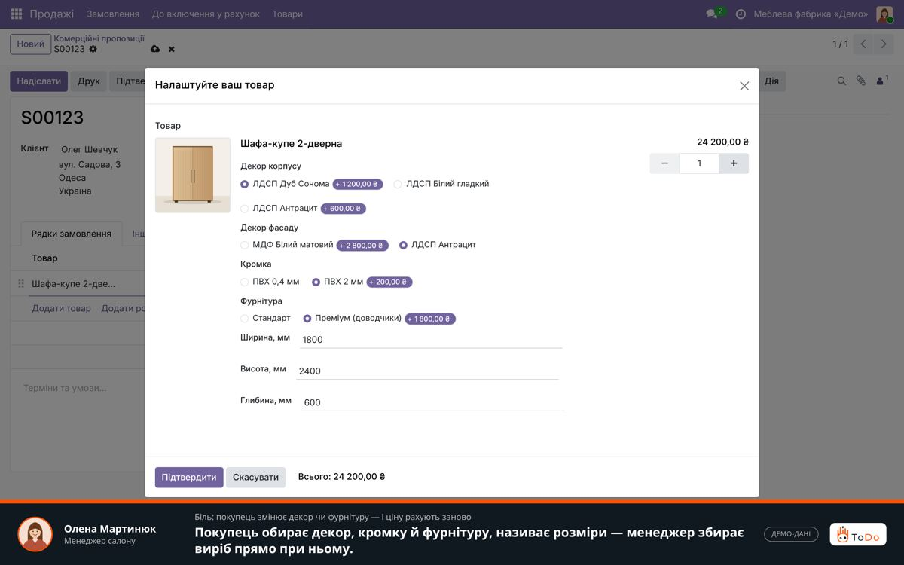
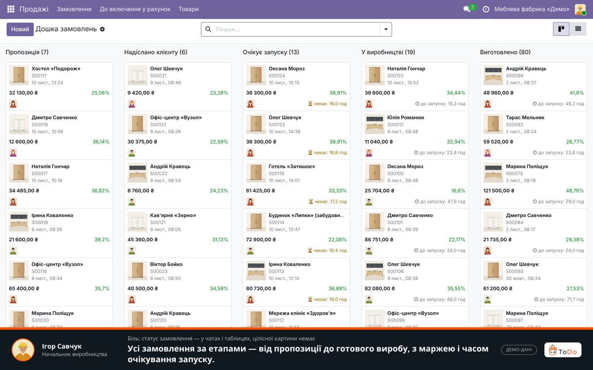
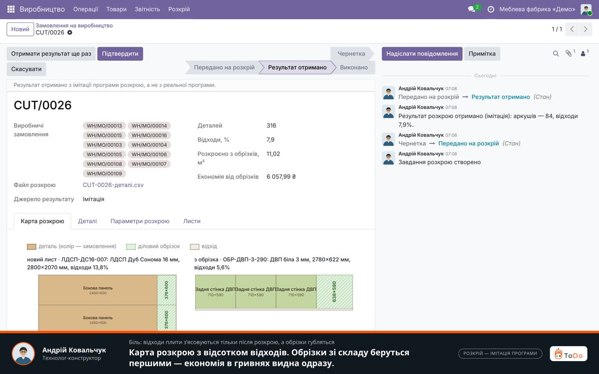
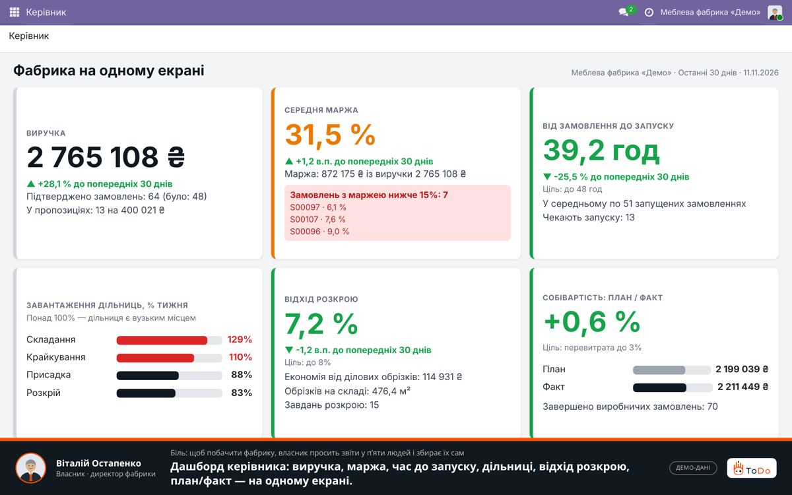
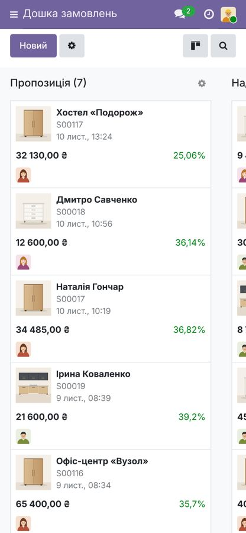

11.11.2026 · редакція R18 (рішення власника 11.11.2026: 18 рішень з 24 вирішено, 6 відкрито)Концепція після рішень власника, перед поверненням на A-20 і прототипом A-21
Галузевий пакет «меблі» на Odoo 19 · концепція для власника продукту
Меблева система замовлень: від заміру до акта монтажу й рекламації
Перший пакет: кухні й корпусні меблі на замовлення (рішення власника 1). Клієнт: компанія на 10–249 працівників, меблі на замовлення (рішення 3а; у смузі 10–249 — 225 компаній: 120 + 105, odb-catalog, знімок серпня 2026), яка продає через салон чи сайт, проєктує в CAD, розкроює сама або замовляє порізку й сама монтує. Головна цінність: один ланцюг замовлення, у якому помилку заміру, недокомплект чи зсув порізки видно до того, як вони зірвуть обіцяну покупцю дату. ФОП-мікроцехам на 1–5 людей пропонуємо окремий легкий тариф (рішення 4).
Журнал flow/decisions.md, рядки 4–27
Рішення власника від 11.11.2026
Рішення власника перекривають рекомендації AI. Із 24 рішень вирішено 18, відкрито 6. Деталі й вибір для відкритих — у розділі «Рішення».
Вирішено (18)
0, 12. Одразу повний пакет; «мости» до Enterprise — у пакеті й годинах з першого релізу.
1. Перший підсегмент — (а) кухні й корпусні меблі на замовлення.
3а. Клієнт — компанія від 10 людей (10–249).
3б, 15. Community — основний вхід (коробка A), Enterprise — апгрейд.
4. Окремий легкий тариф для ФОП-мікроцехів на 1–5 людей.
5. Облік — у BAS/BAF клієнта, від нас — обмін.
17. Підряд і купівля-продаж — обидва режими параметром пакета.
7. Дистриб'ютори (Viyar, Kronas, GibLab) — партнерство: доступ до формату й API.
11. CAD+T — еталон функцій (досліджено за сторінками вендора).
2, 6. Розмітку 60 компаній не робимо; тріали конкурентів відкладено.
8, 19. Крок «Концепція для власника» — у флоу; A-20 повернуто, зріз A-21 перезбираємо.
18, 20. Першоджерела ToDo — після рішення про підставу обробки; платний пілот зі знижкою за кейс.
10. Знято раніше: незалежне ядро на Community.
Окремо: 11 позицій з «відкинутого» повернуто в концепцію (список).
Відкрито (6)
9. Ціна Enterprise для України. Нотатка власника: для розрахунків — €27,90 за повного користувача на місяць.
13. Коротка перевірка на чистих базах (1–2 дні).
14. Ліцензія наших модулів і OCA. Нотатка власника: модулі пишемо самі, OCA — лише ідеї; робоча гіпотеза — ядро без AGPL-залежностей.
16. Склад першого релізу й коробки A.
21. Пороги A-23 і календар.
22. Тека research/sources/ у git.
Ядро і основний вхід · Odoo 19 Community
Усі 15 екранів концепції і сценарій «кухня від заміру до рекламації» працюють на Community. Ліцензій Odoo немає; клієнт платить сервер і адміністрування.
Апгрейд · Odoo 19 Enterprise
Ті самі екрани можуть спиратися на Field Service, Shop Floor, Helpdesk, Quality, Sign, Planning. Це підсилення, а не залежність: ядро працює й без них. Ліцензія рахується на кожну людину компанії: 6 повних користувачів і решта Light, бо Light User за правилами Odoo це й кожен працівник цеху без користувача. Для розрахунків: €27,90 за повного користувача на місяць (рішення 9 відкрите, це нотатка власника). «Мости» до цих додатків входять у пакет з першого релізу (рішення 12).
Що це коштує. Повний пакет першого релізу з «мостами»: ≈3 540–9 150 год з накладними, ≈7,0–22,0 млн грн (середина 14,5). Це на 3,5–10,8 млн більше, ніж будувати лише коробку A (≈3,5–11,2 млн). Легкий тариф ФОП — окремо: +0,17–0,55 млн грн.
Що чесно каже економіка (рішення не змінює). Точка беззбитковості за серединою, без підписки, повний пакет CE-клієнтам: за 1,0 млн грн 64 клієнти, за 1,35 26, за 1,5 20, за 2,0 12, за 2,5 9. Коробка A як вхід несе весь пакет: за 0,7 млн 53, за 1,0 млн 26. Ринок (а) для компаній на 10–249 людей: ≈8 клієнтів за 3 роки. На ньому пакет окупається від ≈2,6 млн грн з клієнта або з підпискою ≈0,4–0,5 млн грн на рік. Усі години: припущення.
Клієнтів пакета ще не було. Усе нижче: гіпотези з доказами, а не підтверджений попит. Функція йде в MVP, лише якщо її біль підтверджено щонайменше двома різними типами джерел або вона обов'язкова за законом; винятки названо явно, 11 позицій власник повернув в обхід правила. Рекомендації AI, які були до рішень власника, лишились на сторінці лише як історія. Позначка гіпотеза означає нашу тезу, яку джерела прямо не підтверджують.
Для кого і який біль
Фабрика на замовлення, де замовлення проходить через 6–8 людей і 3–5 програм
Ніхто не бачить, що помилка заміру, недокомплект чи зсув порізки зірве обіцяну клієнту дату. Замовлення живе в CAD, Excel, месенджері й обліку одночасно.
П'ять підсегментів галузі
Оцінки 1–5 експертні. Гострота болю й якість доказів розділені, щоб брак даних не знижував оцінку сегмента.
(а)рекомендовано першим
Кухні й корпусні на замовлення
Біль 5
Докази 4
Біль чути від покупців, виробників у вакансіях, меблярів і в договорах. Частку в ринку не перевірено.
(д)альтернатива
Офісні й контрактні
Біль 4
Докази 3
Найбільша виручка галузі, локальних конкурентів немає. Шаблон Odoo custom_furniture зроблено під них, але він лише для Enterprise.
Доказів замало для рішення. Потрібні 3–5 розмов з виробниками.
(г)не першим
Масив, столярка
Біль 4*
Докази 2
*Оцінка 4 стосується лише EUDR; операційні болі не оцінено. Кандидат на профіль «експортер».
Розмір ринку
225компаній у профілі 10–249 працівниківКВЕД 31.01, 31.02, 31.09; виручка 10–500 млн грн; рішення 3а
120 + 105смуги 25–249 і 10–24105 компаній на 10–24 людей доступні з Community-тарифом
124смуга 0–9 поза формулою «від 10»компанії з виручкою 10–500 млн грн; ФОП на 1–5 людей — легкий тариф; ФОП в odb-catalog немає
Джерело: odb-catalog, знімок реєстру серпня 2026. Скільки з них саме «кухні на замовлення», невідомо: власник обрав (а) без розмітки 60 компаній (рішення 1 і 2), тому розмір ринку лишається ризиком R-10. Ринок (а) за 3 роки: ≈8 клієнтів базово.
Біль голосами з джерел
«Обіцяли два місяці, вийшло три. … Погоджували параметри техніки, яка має бути, в т.ч. і холодильник. Менеджер сказав, все ок, все підходить. … В результаті - зверніть увагу, наскільки холодильник виступає з пеналу.»
«контролювати строки, якість і комплектацію»; «контрольні заміри»; «вирішення рекламаційних питань»
Постачальник порізки відповідає, що зробив «за вашою картою крою», а порізка приходить «аж через місяць».
«Підписавши доповнення, Замовник бере на себе зобов'язання не змінювати ескіз товару, його габаритні і внутрішні розміри.»
Той самий біль у м'яких меблях (не перший сегмент): «на сайті вказано очікування 4-5 тижнів, по факту потім пишуть в месенджер що 5-6 тижнів… приїхав диван, на 8 тиждень, але спинка від іншого». Покупець дивана на замовлення, vidhuk.ua, 12.2024 (SD в-4).
Нові докази R12
Внутрішні дані ToDo: ліди програють через ціну, а не через функції
До кабінетних доказів додано внутрішні дані ToDo: 56 меблевих лідів і угод 2023–2026 (CRM, пресейл-задачі, дзвінки, зустрічі, база знань). Тут вони подані лише знеособленими агрегатами, без назв і цитат клієнтів. Це класифікація менеджерів ToDo, а не слова клієнтів.
Чим закінчились 56 лідів і угод
Зникли, неактуальноне аргумент ні за, ні проти
26
Програно через ціну≈30 %; до 35 % серед класифікованих
17
Програно через брак функцій
3
Виграно
1
Тривалість впровадження як причину програшу дані не показують: це наша гіпотеза. Повний повторний перебір CRM дав 23 цінові програші, з них (а) — 1, ймовірно (а) — 2 (агрегат нижче).
Хто ці ліди
Опис потреби є лише в ≈30 із 56. З них кухні й корпусні на замовлення (а): 5; ймовірно (а): 3; індивідуальне виробництво без уточнення: 2; інші підсегменти (серійні, м'які, масив, нестандартні, дистриб'ютори, дизайн-студія): 17; не визначено: 3.
Більшість сигналів не від (а). «Ймовірно (а)» не є підтвердженою належністю.
Облік лишається в 1С / BAS в обох клієнтів, які це обговорювали (внутрішні дані ToDo, 2 клієнти). Продаємо «поруч з обліком», а не «замість».
Галузеву коробку купував лише 1 лід (меблева конфігурація 1С); ще 2 — не коробки, а CRM із таблицями та кастомний Odoo Community 17 (внутрішні дані ToDo, 3 ліди). Це не доказ попиту на коробку. 1 клієнт просив почати з базової версії за фіксованою ціною.
Що просили найчастіше
Потреба
Клієнтів / лідів
З них (а)
Відрядна й облік виробітку
5
1 (+1 ймовірно)
Планшет або кіоск для цеху
5
0 (+1 ймовірно)
Видимість статусу замовлення
4
0
Терміни й причина зсуву
4
0
Комплектація й бірки на деталі
3–4
не розкладено
Імпорт із CAD
3
1
Рекламації й брак
3
не розкладено
Монтаж
1 прямо, 2 дотично
не розкладено
Портал для покупця
0
0
Не просили також AI-розбір рекламацій і конфігуратор із правилами для кухонь; ділові обрізки згадав 1 лід. Джерело: внутрішні дані ToDo, 56 лідів (FUNCTIONAL-MAP §2.5.1, §3.1). Конфігуратор і обрізки власник 11.11.2026 повернув у концепцію рішення власника; доказу попиту це не додає, перевірка на A-06 і A-23.
Цінові програші: хто і за якою ціною
Агрегат знято з CRM ToDo 2026-11-11 (лише читання, знеособлено). Повний повторний перебір тієї самої вибірки дав 23 цінові програші; перший прохід, обмежений 140 записами, — 17.
Не визначеноопису немає або тип виробництва не названо
12
Інші підсегментисерійні, м'які, масив, змішані, дистриб'ютор, дизайнери
8
Ймовірно (а)
2
Кухні й корпусні (а)
1
Оцінки угод, які ці ліди відхилили (заповнено в 10 із 23): медіана ≈0,4 млн грн; 8 із 10 нижче 1 млн грн.
У лідів (а) сум немає. Рівень ціни, яку відхиляє саме (а), не перевірено.
Висновок: ціновий сигнал воронки переважно не від (а), а рамковий чек 1 млн грн ≈2,5× вищий за медіану відхилених оцінок.
Інші нові джерела
Скарги на конкурентів. Звірених меблевих відгуків 5 (Katana 3, MRPeasy 1, INNERGY 1), з підсегмента (а) 0, з України 0. Доказів щодо спірних функцій для (а) група не дає (competitor-complaints, рядок 6). Цитати на сторінці «Конкуренти».
За що вже платять. Прямих доказів оплати саме меблевих доробок немає; є маркетинг вендорів, один голос виробника меблів на замовлення і аналогії суміжних галузей (paid-customizations, рядок 5).
Голос виробника. У публічних джерелах прямого голосу виробника про облік не знайдено; решта — непрямий голос покупця у відгуках (producer-voice, рядок 3).
Регуляторика. Норми взято з вторинних публікацій; потреби виведено з норм, попит виробників не підтверджено (regulation, рядки 3–4, 34). Тому норма закону рахується лише умовно.
Як рахуємо доказ
Типи джерел болю: вакансії, відгуки покупців, публічний голос мебляра, договори, внутрішні дані ToDo, меблеві скарги на конкурентів, норма закону.
Кількість лідів одного типу, навіть 5, це сила одного типу, а не другий тип.
Не є доказом болю: функція в конкурента, маркетинг вендора, демо й КП ToDo, AI-підсумки дзвінків, переказ пошуку без звірки, пропозиція нашого продавця.
Як це працює
Кухня від заміру до рекламації: 12 кроків і 13 варіантів
Один наскрізний сценарій MVP. Два варіанти виробництва: власний розкрій або порізка в дистриб'ютора. Номер екрана посилається на список екранів нижче. Помаранчевим виділено кроки, яких у Bimp не заявлено.
Що змінюється: зараз блокнот і фото в месенджері, помилку видно лише на монтажі. З пакетом замір одразу в замовленні.
3
Дизайнер, конструктор
Проєктує в PRO100, БАЗИС або ViyarPro, завантажує файл.
Специфікація деталей з розмірами, кромкою й декором; AI підказує, яка колонка файлу що означає · екран 4
Що змінюється: зараз проєкт деталізують і переносять у порізку вручну. З пакетом імпорт файлу й перевірка перед відправкою. формати не підтверджено файлами
4
Менеджер
Складає пропозицію.
Собівартість і маржа до запуску, графік оплат, обіцяна дата · екран 2
рішення власника Перед цим підбирає виріб у конфігураторі (екран 3, коробка B) або ставить ціну з розмірів у рядку (екран 2, коробка A); обирає юрособу-продавця (B, C)
Що змінюється: зараз маржу видно після закриття замовлення. З пакетом до запуску.
5
Покупець
Погоджує версію проєкту підписом, платить передоплату за рахунком. Онлайн-оплата: опція на сторонньому модулі, на Community 19 не перевірено.
Версія специфікації на погодження, пропозиція, рахунок, позначка оплати · екрани 15, 2
6
Менеджер
Клієнт змінив фасади після погодження.
Нова версія специфікації, нова ціна й дата, причина зсуву «клієнт», на підпис клієнту · екран 15
Що змінюється: зараз договори просто забороняють змінювати ескіз. З пакетом зміна оформлюється з перерахунком. умовно в MVP
7
Технолог
Відправляє на розкрій: у свій цех або на порізку в дистриб'ютора.
рішення власника У коробці B об'єднує розкрій кількох замовлень одного декору в одне завдання і записує ділові обрізки (екран 5)
Що змінюється: зафіксовано, яку саме версію відправили. Кнопку претензії постачальнику відкладено до перевірки.
7а
Закупівельник
Замовляє позиції з довгим строком: фарбовані фасади, кам'яну стільницю, скло, профіль купе, фурнітуру під замовлення.
Рядок специфікації з ознакою «купуємо під замовлення» стає замовленням постачальнику або субпідрядом; постачальник, дата й статус кожної позиції · екрани 2, 6, 8
Що змінюється: прогнозна дата замовлення бере пізнішу з двох дат: готовність цеху або найпізніша замовна позиція. Без цього кроку обіцянка «видно, що зірве дату» хибна на кухні з фарбованими фасадами чи кам'яною стільницею.
8
Майстер цеху, робітники
Ведуть замовлення по дільницях.
Планшет або спільний кіоск із входом за PIN «Взято / Зроблено / Пауза з причиною»; завантаження дільниць; дефіцит матеріалів веде в закупівлю; на дошці замовлення, що зсувають дату, і чия причина · екрани 6, 7, 8
рішення власника У B і C крок контролю якості з фото на операції (екран 7; на Enterprise це Quality)
Що змінюється: зараз про дефіцит фурнітури дізнаються під час збирання. З пакетом забезпеченість видно до запуску.
9
Комплектувальник
Збирає замовлення по місцях.
Комплектувальний лист зі специфікації; відвантаження лише повного комплекту · екран 9
Що змінюється: зараз збирають «на око», недокомплект виявляє монтажник.
10
Бригада монтажу
Монтує, підписує акт із клієнтом.
Календар монтажів; акт із фото, підписом, недоліками й чек-листом приймання за погодженою специфікацією; гарантійний документ; % бригаді з акта · екрани 10, 11
рішення власника Фото з акта позначає у фотоархів для реклами (екран 10)
Що змінюється: зараз % бригаді рахують в Excel. З пакетом з підписаного акта. Гарантійний документ умовно, до юриста
11
Сервіс
Клієнт скаржиться на фасад.
Рекламація з причиною, строком за законом і гарантійним строком; повторне виготовлення; зв'язка з деталлю за бажанням · екран 12
Що змінюється: у відгуках рекламацію не закривали понад 4 місяці (IM:S23). З пакетом у неї є причина й строк.
12
Керівник
Закриває місяць.
Собівартість план і факт по кожному замовленню, маржа, рекламації, зсуви дат · екран 13
рішення власника Щодня дашборд керівника (екран 16): зсуви, рекламації, ціни постачальників, якість; премії й штрафи з причиною на екрані 11
Що змінюється: маржа видна до запуску й після кожної зміни, а не після закриття.
Варіанти сценарію: коли щось іде не за планом
тверде входить у тверде ядро MVP. умовно входить після рішення 16; нові роботи разом ≈28–72 год до накладних, припущення до першого пілота. поза MVP в реєстрі відкинутого або доробка. рішення власника повернуто власником 11.11.2026 без доказу попиту.
#
Варіант
Що відбувається в системі
Статус
1
Свій розкрій чи порізка в дистриб'ютора
Крок 7 веде або в програму розкрою, або в замовлення порізки на субпідряд. Що саме, обирає анкета клієнта.
тверде
2
Зміна до відправлення в розкрій
Нова версія специфікації, нова ціна й дата, причина зсуву, підпис клієнта (екран 15).
умовно
3
Зміна після відправлення в розкрій
Це дозамовлення: нова версія лише змінених деталей і додаткова порізка; розкроєне списується як брак. Автоматичний перерахунок розкроєного поза MVP.
умовно
4
Часткова оплата, монтаж після доплати
Графік оплат у замовленні. Блокувати виїзд без доплати чи лише попереджати, обирає анкета.
умовно
5
Зсув строку з нашої вини
Причина «компанія», нова дата, повідомлення клієнту. Розрахунок пені поза MVP: залежить від того, як юрист кваліфікує договір.
тверде
6
Замовна позиція затримується
Дата постачальника зсуває прогнозну дату, причина «постачальник». Нова робота 8–24 год.
умовно
7
Недокомплект при комплектації
Неповний комплект не відвантажити; відсутня деталь іде в дозамовлення; довезення окремим виїздом, не рекламацією.
тверде
8
Монтаж у кілька виїздів
Кілька виїздів на договір, акт етапу й фінальний акт; % бригаді за фінальним актом або по етапах. +8–24 год.
умовно
9
Об'єкт клієнта не готовий
Етап «Готове, чекає клієнта» на дошці, нова дата, нагадування про доплату, місце зберігання; KPI «днів на складі» і «заморожена сума». +4–8 год.
умовно
10
Договір на кілька виробів
Кухня, шафа й передпокій в одному замовленні: на кожен виріб своя версія специфікації й своє виробниче замовлення.
тверде
11
Рекламація і повторне виготовлення
Ремонт або нове виробниче замовлення на деталь; витрати на замовлення; хто платить: компанія, постачальник чи бригада.
тверде; дії умовно
12
Брак у цеху до відвантаження
Кнопка «брак» на кіоску, причина, повторна деталь або дозамовлення, зсув прогнозної дати. +8–16 год.
умовно
13
Оплати на різних продавців (ТОВ + ФОП)
У коробках B і C кілька юросіб в одній базі за рішенням власника: обмін з BAS на кожну юрособу, ПРРО опцією; 40–100 год, нижня межа, доки не вирішено, як ділити одне замовлення. У коробці A одна юрособа.
рішення власника
Ролі
День з життя шести людей
Замірник
3–4 виїзди на день
ЗаразБлокнот і фото в месенджері. Помилку заміру видно лише на монтажі.
З пакетомЗамір-лист одразу в замовленні: ніші, техніка, фото, геометрія.
Конструктор-технолог
Деталювання, карти розкрою, заявки на фурнітуру
ЗаразВручну деталізує проєкт і переносить у порізку.
З пакетомІмпорт файлу проєкту й перевірка перед відправкою.
Майстер цеху
Дільниці, черга, дефіцит
ЗаразПро дефіцит фурнітури дізнається, коли вже збирає.
З пакетомБачить забезпеченість матеріалами до запуску.
Комплектувальник
Пакування й відвантаження
ЗаразЗбирає «на око». Недокомплект виявляє монтажник.
З пакетомКомплектувальний лист по місцях, відвантаження лише повного комплекту.
Бригадир монтажу
Бригада, акт, оплата
Зараз% бригаді рахують в Excel.
З пакетомНарахування з підписаного акта монтажу.
Керівник
Маржа, строки, рекламації
ЗаразМаржу бачить після закриття замовлення.
З пакетомМаржу видно до запуску й після кожної зміни. Щодня один екран: дашборд керівника рішення власника
Екрани MVP для прототипу A-21
15 екранів: що бачить користувач і на чому це зроблено в кожній редакції
Після рішення власника 11.11.2026: 15 екранів (1–13, 15, 16). Повернуто екран 3 «Підбір виробу» і додано 16 «Дашборд керівника». Розширено 2, 5, 7, 8, 10, 11 позиціями, які власник повернув без доказу попиту; вони позначені рішення власника. «Портал покупця» (14) лишається прибраним. Повний список повернутого з ризиками нижче, у блоці «Повернуто рішенням власника».
CE Community, ядро: так екран працює в кожного клієнта EE що змінюється, якщо клієнт на Enterprise ≥ 2 типи доказ болю за правилом умовно підтвердити на A-06 / A-23 або в юриста виняток у MVP попри слабший доказ
1
Замір-лист
Ніші, комунікації, техніка, фото й геометрія приміщення в картці замовлення
CE
Наш модуль на задачі проєкту; запис на замір через календар. Браузер телефону чи планшета + безкоштовний OCA-модуль web_responsive (під питанням, рішення 14 відкрите: без нього адаптивний інтерфейс Community — наша робота, не оцінено) не перевірено на пристроях; застосунку Odoo з магазинів немає (таблиця редакцій: лише Enterprise)
EE
Той самий модуль: шаблон виїзного звіту Field Service робиться лише в Studio, тому замір-лист наш і тут. Замір можна показати як задачу Field Service; мобільний застосунок Odoo
≥ 2 типи
2
Замовлення клієнта
Калькуляція, маржа, графік оплат, обіцяна й прогнозна дата; ціни прайсу й КП за курсом НБУ; ціна виробу з розмірів у рядку рішення власника
CE
Стандарт (продажі, передоплати за рахунком; онлайн-оплата лише опція, на CE 19 не перевірено) + наш модуль (маржа, дати, курс НБУ, нагадування про доплату, версія специфікації при зміні)
EE
Те саме ядро, наш модуль і тут: провайдера НБУ документація 19.0 не називає, стандартні нагадування Enterprise лише про прострочені рахунки, а не за графіком оплат замовлення. Нагадування про прострочені рахунки клієнт може ввімкнути поряд
≥ 2 типиграфік оплат і курс НБУ умовно
4
Специфікація замовлення
Деталі Д×Ш×Т, кромка, декор; імпорт з PRO100, БАЗИС, ViyarPro, KRONAS. Макет: формати не підтверджено файлами
CE
Стандарт (специфікація) + наш модуль (розміри, імпорт, AI-мапінг колонок)
EE
Те саме
≥ 2 типиімпорт Excel умовно
5
Розкрій або порізка
Список деталей у програму розкрою або замовлення порізки; перевірка й відправлена версія; етикетки деталей. Завдання розкрою на кілька замовлень за декором і вкладка «Ділові обрізки» рішення власника, лише B і C
CE
Стандарт (субпідряд) + наш модуль
EE
Те саме
≥ 2 типиетикетки умовно, 160–320 год
6
Дошка замовлень
Етапи до монтажу; червоним замовлення, що зсувають дату; причина зсуву: клієнт чи ми
CE
Стандарт (етапи) + наш модуль (прогноз дати)
EE
Те саме
≥ 2 типипричина зсуву: виняток, 8–24 год
7
Планшет цеху
«Взято / Зроблено / Пауза з причиною»; спільний кіоск із PIN для всіх робітників; завантаження дільниць календарем або списком, без Ганта; крок контролю якості з фото рішення власника, лише B і C (на Enterprise це стандарт Quality)
CE
Стандарт (кнопки «Почати / Пауза / Готово» і блок із причиною на робочому замовленні) + наш модуль: планшет із входом працівника за PIN. Час у Community пишеться на користувача Odoo; вхід за PIN без користувача не перевірено, рішення 13
EE
Стандарт Shop Floor: вхід за PIN без окремого користувача, час за кожним працівником. Вхід за бейджем у Shop Floor документація не описує. Ліцензія потрібна на кожного: працівник без користувача рахується як Light User
планшет умовнокіоск: виняток; +40–80 год, якщо PIN не пройде
8
Дефіцит і закупівля
Чого бракує під замовлення, кнопка закупівлі; прайси постачальників: імпорт, оновлення, сигнал «ціна вища за історію» рішення власника
CE
Стандарт
EE
Те саме
виняток: налаштування, 0 год
9
Комплектувальний лист
Що в яке місце пакувати, що вже зібрано
CE
Стандарт (пакування) + наш модуль (лист по місцях і екран сканування)
EE
Те саме ядро; стандартний Barcode (сканування, пакування в місця) за бажанням клієнта, без «моста». Заборони відвантажувати неповний комплект у документації немає: цей контроль наш і тут
≥ 2 типи
10
Календар монтажів і акт
Графік бригад; акт із фото, підписом і недоліками; чек-лист приймання за погодженою специфікацією; гарантійний документ; позначка «у фотоархів» і галерея об'єктів рішення власника
CE
Задачі проєкту й календар + наш модуль: інтервал виїзду й бригада (у задачі Community лише крайній термін, без Ганта), статуси, акт, підпис через портал. Запасний варіант: OCA Field Service під AGPL знято робочою гіпотезою рішення 14 (ядро без AGPL-залежностей)
EE
Без «моста» той самий модуль; з «мостом» Field Service і Planning + наш акт. Field Service дає Гант і кількох виконавців, бригада як ресурс лише в Planning. Підпис клієнта заявлено на сторінці застосунку, але шаблон звіту робиться лише в Studio, тому акт наш
Відрядна за операціями й % бригаді за актом. Правила поділу дає клієнт. Премії й штрафи з причиною рішення власника
CE
Наш модуль; час зі стандартних робочих замовлень (на користувача; працівник через PIN планшета)
EE
Наш модуль і тут: Payroll Enterprise без локалізації для України й без відрядної за операціями. Час із Shop Floor
≥ 2 типи
12
Рекламація
Причина, повторне виготовлення, строк за законом і гарантійний строк із продовженням на час ремонту; деталь як необов'язкове поле
CE
Наш модуль (дії «повернення / ремонт / виїзд») + стандарт Repairs. OCA-тікети не беремо: їхня модель має ту саму назву, що й Helpdesk на Enterprise
EE
Той самий модуль + «міст» до Helpdesk і Repairs. Helpdesk з тікета дає повернення, ремонт, виїзд і SLA; строки за законом і гарантія наші
≥ 2 типисервіс і гарантійний строк умовно, до юриста
13
Собівартість замовлення
План і факт по матеріалах, роботах і порізці
CE
Стандартна аналітика + наш звіт. За кодом Odoo 19.0 Community сам пише матеріали й час виробничого замовлення на аналітичний рахунок проєкту замовлення. Не перевірено лише вмикання аналітики в налаштуваннях без Enterprise (рішення 13)
EE
Те саме ядро; повний бухоблік Enterprise за бажанням
виняток: прямих доказів план ↔ факт 0; 24–64 год
15
Погодження й зміна замовлення
Версія специфікації на підпис клієнту; при зміні нова ціна, дата й причина зсуву
CE
Наш модуль: власна версія специфікації, підпис через портал
EE
Наш модуль і тут: PLM веде лише інженерні зміни специфікації виробу, погоджують працівники; версії замовлення й підпису клієнта в ньому немає
умовно: зміна й погодження
3
Підбір виробу
Виріб із каталогу модулів, розміри, декор, фурнітура, кромка; правила сумісності; ціна йде в рядок замовлення і чернетку специфікації. Лише B і C
CE
Наш модуль: варіанти Odoo не працюють для довільних розмірів, гілка 19.0 OCA-конфігуратора порожня
EE
Те саме
рішення власникадля кухонь прямо ніхто не просив; 160–320 год
16
Дашборд керівника
Один екран: замовлення, що зсувають дату, рекламації, маржа план і факт, невідповідності якості, ціни постачальників
CE
Наш екран на стандартних поданнях: графік, зведена таблиця, картки KPI
EE
Те саме; Spreadsheet за бажанням клієнта
рішення власникаболю ролі немає; 32–80 год
14
Портал покупця
Прибрано: кабінет зі статусом не просив жоден із 56 лідів. Доступ клієнта за посиланням для підпису (10, 15) і рахунку (2) лишається: це стандартний портал Odoo. Онлайн-оплата через нього лише опція на сторонньому модулі.
Повернуто рішенням власника 11.11.2026: 11 позицій без доказу попиту
Ці позиції не пройшли правило «щонайменше 2 типи джерел». Власник повернув їх у концепцію своїм рішенням, тому в кожної є ризик «немає доказу попиту» і перевірка на розмовах A-06, тесті попиту A-23 або в пілоті. Якщо перевірка скаже «ні», позиція повертається в реєстр відкинутого, а коробка перераховується. Години до накладних, припущення.
Позиція
Екран
Коробка
Год
Ризик
Що перевірити
Прайси постачальників: імпорт, оновлення, ціна проти історії закупівлі · NP-02
8
A, B, C
24–60
низький–середній
чи ловили переплату проти минулої закупівлі
Контроль якості на дільницях з фото · P-07
7, 16
B, C
60–120
середній
частка браку декору й кромки; на Enterprise це стандарт Quality
Пакет міграції: BAS/BAF і БАЗИС, повна міграція даних · D-10
запуск
B, C
100–200
середній, є «проти»
що саме клієнт хоче перенести і чи платить за історію
Премії й штрафи з причиною · N-04
11
A, B, C
24–60
середній
хто вирішує премії й штрафи і як рахують
Фотоархів об'єктів з акта для реклами · N-07
10
A, B, C
8–24
низький
чи беруть фото з актів для сайту й соцмереж
Ціна виробу з розмірів у замовленні · P-01 спрощено
2; 3 лише B, C
A, B, C
60–120
високий
чи рахують ціну з габаритів вручну і скільки часу
Підбір виробу, конфігуратор · S-01
3
B, C
100–200
високий
чи обирають конфігуратор на A-23; чи є каталог модулів
Кілька юросіб (ТОВ + ФОП) · C-03
налаштування; 2, 10
B, C
40–100, нижня межа
середній
скільки юросіб і баз BAS; як ділять замовлення. Замовлення в Odoo належить одній компанії, тому як його ділити, ще не вирішено
Дашборд керівника, окремий екран · C-04
16
A, B, C
32–80
середній
які 3–5 цифр керівник дивиться щодня
Ділові обрізки · F-11 / S-09, D-09
5
B, C
60–120
високий
чи ведуть обрізки і скільки втрачають
Завдання розкрою на кілька замовлень · D-16
5
B, C
160–320
високий, найдорожчий
чи пакетують розкрій за декором вручну
Разом
A: 148–344
668–1 404
У коробці A лише дешеві позиції для власника (рекомендація AI); у B і C усі 11
Обсяг MVP до рішення власника: тверде ядро, винятки й умовні рядки
Години до накладних, припущення, а не кошторис. Смуга показує частки за серединами діапазонів.
≈908–2 016 год тверде ядро: ≥ 2 типи джерел болю
≈192–408 год 6 винятків: собівартість, причина зсуву, кіоск, обмін з BAS / 1С (160–320), дефіцит і маршрут «на замовлення» (0)
≈500–1 088 год умовно, ≈31 % MVP; з накладними ≈700–1 795. Найбільший рядок: етикетки деталей
Скільки дає стандарт Odoo 19: окремо для двох редакцій
Розрахунок на 49 рядках функціональної карти (FUNCTIONAL-MAP §2.4). Меблева цінність у тих самих 10–12 наших модулях на обох редакціях; Community додає ≈9 менших наших робіт.
6,1 % · 8,2 % стандарт, документацію не перевірено
44,9 % · 55,1 % стандарт плюс наш модуль
24,5 % · 24,5 % лише наш модуль або інтеграція
Стандарт + OCA без нашого коду на Community: 0 % (4,1 %, лише якщо графіки беремо з OCA).
Що на Community будуємо самі, а на Enterprise дає Odoo
Звірено з документацією Odoo 19.0, сторінками застосунків і таблицею редакцій 11.11.2026.
Планшет цеху з входом за PIN (7). Shop Floor дає частково: без входу за бейджем; ліцензія Light User на кожного працівника
Екран сканування комплектації (9). Barcode дає частково: сканування й пакування в місця, без заборони неповного відвантаження
Графік бригад і підпис акта (10). Field Service і Planning дають частково: Гант і підпис є, бригада лише як ресурс Planning, акт лише через Studio. Без діаграми Ганта: у Community її немає; Гант лише OCA web_timeline під AGPL або власний вид, години не пораховано
Рекламація з діями «повернення / ремонт / виїзд» і SLA (12). Helpdesk дає повністю
Мобільний застосунок з магазинів (7, 10). За таблицею редакцій лише Enterprise
Наш модуль на обох редакціях: Enterprise цього не дає
Курс НБУ (2): провайдера НБУ документація 19.0 не називає, перевірити на тріал-базі
Нагадування за графіком оплат замовлення (2): нагадування Enterprise лише про прострочені рахунки
Версія специфікації замовлення з підписом клієнта (15): PLM веде лише інженерні зміни виробу
Контроль «без повного комплекту не відвантажити» (9), акт монтажу (10), замір-лист (1)
Відрядна за операціями й % бригаді (11): Payroll без України й без відрядної
З OCA в ядрі лише web_responsive (під питанням, рішення 14) (адаптивний інтерфейс, LGPL). Майже всі інші потрібні OCA-модулі під AGPL (ризик 4, рішення 14). Замір-лист на обох редакціях наш: на Enterprise шаблон виїзного звіту вмикає Studio і дорожчий план. Прототип A-21 і демо на Community. «Мости» робимо лише до шести додатків Enterprise (виїзд, цех, якість, сервіс, підпис, планування); стандартні Barcode і нагадування про прострочені рахунки клієнт вмикає сам. «Мости» й до цих двох: +48–120 год, у бюджет не включено (було «до чотирьох, +96–240 год»: до курсів і PLM «мостів» не буде).
Що вже є в реальному зрізі A-21
Скріни з Odoo 19 Community на демо-даних «Меблева фабрика «Демо»»

Конфігуратор у пропозиції. Менеджер обирає декор, кромку, фурнітуру з доплатами і вводить розміри; ціна рахується одразу. Екран 3 повернуто рішенням власника, лише в коробках B і C.

Дошка замовлень (екран 6, частково 2). Етапи від пропозиції до виготовлення, сума, маржа у відсотках і скільки годин замовлення чекає запуску.

Карта розкрою (екран 5, власний розкрій). Одне завдання на кілька виробничих замовлень, відходи й ділові обрізки. Результат з імітації програми розкрою. Обрізки й розкрій кількох замовлень разом повернуто рішенням власника, лише B і C; імітацію оптимізатора прибрати.

Дашборд керівника (близько до екрана 13). Виручка, середня маржа, замовлення з маржею нижче 15 %, час до запуску, завантаження дільниць, собівартість план і факт.

Дошка на телефоні. Той самий канбан у мобільному браузері.
Що в зрізі є
Специфікація виробу, ціна й маржа, пропозиція, підтвердження (екрани 2 і 4, без імпорту з CAD)
Дошка замовлень з маржею й очікуванням запуску (6)
Виробничі замовлення, нестача матеріалів, завантаження дільниць (8, частково 7)
Власний розкрій з картою (5, частково)
План і факт собівартості, дашборд керівника (13)
17 екранів, 5 наших модулів, 39 автотестів, Odoo 19 Community.
Що є, хоча MVP цього не просить
Імітація програми розкрою: її прибрати. Конфігуратор, ціна з розмірів, обрізки й розкрій кількох замовлень разом власник повернув у концепцію 11.11.2026, тож у зрізі вони лишаються; зріз дає основу для 8 з 15 екранів.
Чого в зрізі немає
Замір-лист (1)
Імпорт проєкту з CAD (4)
Порізка в дистриб'ютора, перевірка, етикетки (5)
Планшет і кіоск цеху (7)
Комплектувальний лист (9)
Календар монтажів, акт і % бригаді (10, 11)
Рекламація (12); погодження й зміна замовлення (15)
Саме ці екрани несуть відмінність від Bimp і стандартного Odoo.
Ланцюг і хто його закриває
Від заміру до рекламації ланцюг не закриває жодна з перевірених систем
●є з доказом (документація, відео, довідка)◐частково, або доказ лише маркетинг чи сніпети—немає або не заявлено?не перевірено◎ціль пакета, ще не збудовано; курсивом: лише на Community
OCA: модулі спільноти для 19.0, ще не встановлені, тому лише ◐; майже всі під AGPL, у ядро пакета їх не беремо (рішення 14). Еталони розбито по системах; їхні докази маркетинг і сніпети довідки, тому повних ● у них немає. Genesis, Plugit, BAS/1С і ECOSIRE у схему не внесено: це проєкти під клієнта або модулі без публічної документації.
Біла пляма гіпотеза
Наскрізну зв'язку «деталь → комплектація → монтаж → рекламація» публічно не описує ніхто. Серед систем, перевірених документацією (Bimp, KeyCRM, Katana, Viyar, БАЗИС, PRO100), ланцюг від заміру до рекламації не закриває жодна. За кордоном закриті окремі ланки.
Відсутність у маркетингу не доводить відсутності в продукті. Перевіряється тріалами (рішення 6).
Головні конкуренти коротко
Bimp ERP (UA)
$1 490 / 2 390 / 5 490 на рік · 5 / 10 / 25 корист.
Що це
Хмарна облікова ERP, найглибша задокументована. Головний еталон паритету й ціни.
Сильне
Відрядна за статусом етапу, ліміти перевитрат, ремонт компонента з собівартістю, UA-інтеграції, ціна.
Чого немає
Замір, комплектація зі специфікації, акт монтажу, рекламація, зміна замовлення, імпорт із CAD: «не заявлено».
KeyCRM (UA)
$19 на місяць + $9 за кожні 200 замовлень
Що це
CRM з модулем «Виробництво» для товарів під замовлення.
Сильне
Продаж, маркетплейси, банки, ПРРО, Нова Пошта; ціна. Проти нього продаємо специфікацію, собівартість і цех, а не ціну.
Чого немає
Специфікації, списання матеріалів, собівартості виробу, відрядної, цеху й монтажу.
Viyar, Kronas (дистриб'ютори)
конструктор безкоштовний для клієнтів не перевірено
Що це
Постачальник плит з онлайн-конструктором і порізкою.
Для нас
Партнери: пакет приймає їхні проєкти й замовляє порізку. Загроза: добудують облік.
Odoo custom_furniture
лише з Enterprise
Що це
Офіційна демо-конфігурація під проєктні меблі: робочі центри, операції, ролі архітектора, 3D-дизайнера, монтажника.
Для нас
Рішення власника 11.11.2026: ядро від нього не залежить, це лише джерело ідей і даних для Enterprise-варіанта.
Власне 3D-проєктування і рендерІнтегруємося з PRO100, БАЗИС і конструкторами дистриб'юторів, а не замінюємо їх.
Оптимізацію розкрою і програми ЧПУЦе шар CAD/CAM: БАЗИС, GibLab, сервіси дистриб'юторів.
Розкладку тканин для м'яких меблівЦе Lectra.
Повний український бухоблік і зарплату в MVPОблік у BAS/BAF клієнта або локалізація Odoo: рішення 5.
ФОП-мікроцехи на 1–5 людей у повному пакетіДля них окремий легкий тариф на нашому сервері (рішення 4, блок «Легкий тариф ФОП» у розділі «Коробка»). До рішення були поза пакетом.
Наших модулів на StudioНа жодній редакції: Studio є лише в Enterprise і переводить клієнта на дорожчий план.
Залежності ядра від custom_furnitureЦе шаблон Odoo для Enterprise; для нас лише джерело ідей і даних (рішення власника 11.11.2026).
У концепцію не входятьКабінет покупця, претензія постачальнику порізки, Нова Пошта, маркетплейси й POS, пакет даних EUDR, AI, крім мапінгу файлу. Конфігуратор, ціну з розмірів, ділові обрізки й розкрій кількох замовлень власник повернув у концепцію 11.11.2026.
Повернуто рішенням власника 11.11.2026 — 11 позицій без доказу попиту, серед них прайси постачальників (NP-02), колишній перший кандидат на повернення (блок «Повернуто рішенням власника»). Перший кандидат на повернення за доказом тепер претензія постачальнику порізки (D-17). Повний реєстр відкинутого: 48 позицій у групах 1–4, 11 повернуто в концепцію (4а) і 1 — окремим тарифом (4б): «Що ми відкинули і чому».
Гроші
Повний пакет з «мостами»: ≈7,0–22,0 млн грн розробки, ринок ≈8 клієнтів
R18: економіка після рішень власника 11.11.2026 (чинне)рішення власника
Враховано рішення 0 (одразу повний пакет), 12 («мости» одразу), 5 (облік і ПН у BAS), 3а (клієнт 10–249), 3б (Community — вхід, Enterprise — апгрейд), 9 (Enterprise за €27,90), 15 (коробка A як вхід). Ставка продажу 1 975–2 400 грн/год, накладні +40–65 %. Усі години — припущення; крок A-03c «Готові модулі ToDo» ще не проведено. Розрахунок R17 нижче — історія.
Що будуємо
Год до накладних
З накладними
Розробка, млн грн
Запуск у клієнта, год (млн грн)
Повний пакет першого релізу з «мостами»: 15 екранів, 11 повернутих позицій, рядки «умовно», «мости» до Field Service, Shop Floor, Quality, Helpdesk, Sign, Planning; облік і ПН у BAS
Легкий тариф ФОП (рішення 4), поза цифрою повного пакета
+60–140
+84–231
+0,17–0,55
8–16 год на клієнта
«Мости» — +168–408 год до накладних (+0,46–1,62 млн грн). Облік і ПН у BAS — −80–160 год проти «ПН в Odoo». Чутливість: накладні ±10 п. п. — ≈±0,5–1,3 млн грн; два режими договору (рішення 17) +16–40 год, +0,04–0,16 млн грн припущення; кіоск без підтвердженого входу за PIN на Community (рішення 13) +40–80 год, +0,11–0,32 млн грн; після A-03c години менші, не оцінено.
Точка беззбитковості повного пакета, клієнтів (а) за 3 роки
Оптимістично (нижні години) / середина / песимістично (верхні); без підписки; «—» — внесок не більший за нуль. Розробку несуть усі клієнти пакета, запуск — за коробкою, яку купує клієнт. арифметика на припущеннях
Як продаємо
1,0 млн грн
1,35
1,5
2,0
2,5
Повний пакет CE-клієнтам (запуск B)
13 / 64 / —
8 / 26 / 83
7 / 20 / 53
5 / 12 / 24
4 / 9 / 16
Повний пакет EE-клієнтам (запуск C; ліцензію отримує Odoo)
16 / 156 / —
9 / 33 / 300
8 / 25 / 99
5 / 14 / 31
4 / 10 / 18
Коробка A як вхід (рішення 15)
0,4 млн грн
0,7
1,0
Клієнти A несуть розробку всього пакета
51 / — / —
16 / 53 / 192
10 / 26 / 53
Для порівняння: якби будували лише A
26 / — / —
9 / 27 / 98
5 / 13 / 27
Ринок після рішення 3аКлієнт 10–249: ≈8 клієнтів (а) за 3 роки базово. Колишні ≈12 рахували ще компанії на 0–9 людей; вони поза формулою «від 10». Ринок легкого тарифу не пораховано: ФОП в odb-catalog немає.
Ціна, за якої пакет окупаєтьсяСередина, без підписки: на ринку ≈8 — ≈2,6 млн грн з CE-клієнта (≈2,7 з EE), на ≈12 — ≈2,0, на колишньому порозі 24 — ≈1,37. Медіана оцінок, які цінові ліди відхилили як «дорого», ≈0,4 млн грн (агрегат CRM, n = 10).
Підписка, що закриває різницю на ринку ≈8Повний пакет за 1,0 млн — ≈0,53 млн грн на рік з клієнта; за 1,35 — ≈0,41; коробка A за 1,0 як вхід — ≈0,41. Bimp на 10 користувачів — ≈0,11 млн грн на рік.
Пілот (рішення 20)Знижка Z % з ціни A зменшує внесок пілотного клієнта на Z % × ціну: A за 1,0 млн зі знижкою 30 % дає внесок як A за 0,7 (+0,11…+0,44 млн грн) приклад.
Що чесно каже економіка при рішенні 0 (рішення не змінює):
За серединою годин, без підписки й на ринку ≈8 повний пакет не окупається за жодної ціни до 2,5 млн грн. Окупність дають лише: ≈2,6 млн грн з клієнта (≈6,5× медіани відхилених оцінок), підписка ≈0,4–0,5 млн на рік (≈4–5× Bimp), ширший ринок ((б), (д), інші країни — не досліджено) або менші години після A-03c.
Коробка A як вхід за 1,0 млн несе повний пакет лише з 26 клієнтами (якби будували лише A — 13). Кожен клієнт A, який потім купить B, C або підписку, зменшує цю цифру; частку таких апгрейдів не досліджено.
Рішення 0 разом із 2 (без розмітки) і 6 (без тріалів) означає, що +3,5–10,8 млн грн розробки витрачається до сигналу A-23 і до файлів CAD. За колишнім правилом «стоп, якщо понад 24 клієнти» повний пакет за 1,0 млн був би «стоп» (64), за ціни від ≈1,4 млн — «далі».
Оптимістична межа (нижні години) — 8–13 клієнтів за 1,0–1,35 млн; песимістична — за 1,0 млн не окупається. Ринок, ціну, підписку й частку собівартості в ставці обирає власник.
Ліцензія Enterprise для клієнта на 10–249 людей
Рішення 3б і 9: €27,90 = $31,32 за повного користувача на місяць (партнер Plugit, річна оплата; ціна для розрахунків, формально рішення 9 відкрите). Склад: 6 повних + (N − 6) Light за $8,90 (орієнтир, ціну Light дає радник Odoo). розрахунок за формулоюЧастка Light у сумі (Light $8,90 × 12 ≈ $107 на рік, орієнтир odoo.com не перевірено): N = 10 — 16 %, 25 — 47 %, 50 — 68 %, 100 — 82 %. Від 25 людей цифра залежить переважно від неперевіреної ціни Light, а не від €27,90; ціну Light закриває те саме рішення 9.
Працівників N
Склад ліцензії
$ на рік
млн грн на рік
$ на людину на місяць
Проти Bimp
10
6 + 4 Light
≈2 680
≈0,12
≈22
×1,1 (Bimp на 10 — $2 390)
25
6 + 19 Light
≈4 280
≈0,19
≈14
×0,8 (Bimp на 25 — $5 490)
50
6 + 44 Light
≈6 950
≈0,32
≈12
Bimp на 50 — не перевірено
100
6 + 94 Light
≈12 290
≈0,56
≈10
не перевірено
Якщо повних користувачів більше (10 на 50 людей або 15 на 100) — ≈$8 030 і ≈$14 720 на рік. Плюс сервер і адміністрування; ціну Odoo.sh не зафіксовано. На Community ліцензій немає: це і є аргумент «Community — основний вхід».
Історія R17: два тарифи й розрахунок до рішень 0, 5 і 12
Порівняння тарифів Community і Enterprise з Bimp нижче чинне. Години «MVP у складі коробки B», точки беззбитковості 14 / 29 / 61 / 161 і ринок ≈12 — історія R17: тоді заголовною цифрою був MVP коробки B з ПН в Odoo, а «мости» планували після першого Enterprise-клієнта.
Рік, без впровадження й без нашої підписки на модулі; усе в доларах США. Євро й гривні за курсом НБУ на 11.11.2026: 1 € = 1,1226 $, 1 $ = 45,5013 грн.
Community: ліцензій Odoo немає
Odoo Online не приймає власні модулі, Odoo.sh для Enterprise, тож Community на власному сервері. Клієнт платить сервер (VPS від €5,49 до $50 на місяць) і адміністрування партнером за 1 975–2 400 грн/год. Години адміністрування й сервер: наше припущення.
Користувачів
Community: сервер + адміністрування
Bimp
÷ Bimp
10
≈ $1 220–2 880
$2 390
×0,5–1,2
25
≈ $1 910–4 400
$5 490
×0,35–0,8
24–48 год адміністрування на рік за 10 користувачів. Адміністрування: 85–90 % суми тарифу. Чутливість (10 / 25 користувачів): 24 год ×0,5–0,7 / ×0,25–0,34; 48 год ×0,95–1,2 / ×0,44–0,57; 96 год ×1,8–2,3 / ×0,8–1,0.
Чого в Community-тарифі немає, а в Bimp є
Повний облік. Головна книга, фінзвіти, звірка банківських виписок і бюджети в Community не входять. Аналітика для собівартості замовлення є (за кодом 19.0). Облік у BAS/BAF клієнта з обміном через наш модуль або OCA-модулі обліку години не пораховано.
Перехід на нову версію Odoo. Сервіс оновлення лише в Enterprise; Odoo 20 уже опублікована. На Community OpenUpgrade або ручна міграція. Груба оцінка: 24–80 год на базу раз на 3 роки, це $350–1 400 на рік для клієнта припущення.
З оновленням версії: ×0,65–1,8 від Bimp для 10 користувачів і ×0,4–1,1 для 25. «Не дорожче за Bimp» для 10 користувачів лише за нижніх припущень. З обліком порівняння не пораховано.
Рік для клієнта на 10 користувачів, долари США
Enterprise для компанії на 10 людей: 6 повних користувачів і 4 Light User. Кожен активний працівник без користувача, зокрема робітник із PIN у Shop Floor, теж рахується як Light User, тому ліцензію рахуємо від чисельності компанії: 6 повних і решта Light. Для 25 людей (6 + 19 Light): Plugit ≈$4 280 (×0,8 від Bimp на 25, $5 490), odoo.com річна ≈$6 420 (×1,2), помісячна ≈$7 510 (×1,4). Кожна людина понад це +≈$107 на рік. Light User оформлює лише радник Odoo; $8,90 на місяць узято як орієнтир. Яка ціна Enterprise діє для українського клієнта, не з'ясовано.
Community: сервер + адмініструваннябез обліку й оновлення версії
$1 220–2 880 · ×0,5–1,2
Bimpхмара, хостинг у ціні
$2 390 · база
Enterprise: ціна партнера для УкраїниPlugit, €27,90 за повного; лише ліцензія
≈$2 680 · ×1,1
Enterprise: odoo.com, річна$61,00 за повного; ціни для США
≈$4 820 · ×2,0
Enterprise: odoo.com, помісячна$76,20 за повного
≈$5 910 · ×2,5
$02 0004 0006 000
Чесне порівняння з Bimp: «з сервером і адмініструванням». Тоді Enterprise ×1,6–2,3 (Plugit) і ×2,5–3,2 (odoo.com річна). KeyCRM ($19 на місяць) лишається дешевшим.
Історія R17. Години розробки з накладними: коробки A, B, C і повний пакет
Груба рамка, а не кошторис. Дві редакції дорожчі: на Community замір, монтаж, цех, якість, сервіс і мобільні екрани будуємо самі (+364–784 год), плюс тестування на обох редакціях. Курс НБУ, нагадування за графіком оплат і версія специфікації (92–192 год) тепер у ядрі обох редакцій, бо Enterprise їх не дає; підсумки не змінились.
Було: лише Enterpriseдо рішення про дві редакції
2 100–5 300
Коробка A «CE-старт»3,7–11,8 млн грн
1 890–4 910
MVP у складі коробки Bзаголовна цифра R17 · 15 екранів · 6,7–21,0 млн грн
3 420–8 740
Коробка C «EE»B + «мости» · 7,2–22,6 млн грн
3 650–9 410
Повний (а), без «мостів»перераховано під рішення власника · 6,9–21,5 млн грн
3 480–8 950
Повний (а), з «мостами» до EE7,3–23,1 млн грн
3 720–9 620
0 год2 5005 0007 50010 000
«Мости» до Field Service, Shop Floor, Quality, Helpdesk, Sign і Planning: +168–408 год до накладних. Варіант «наші модулі поверх OCA під AGPL» ≈2 900–7 480 год, тобто не дешевший. Ставка партнера 1 975–2 400 грн/год. Якщо облік і накладні лишаються в BAS: MVP ≈3 300–8 470 год, ≈6,5–20,3 млн грн. MVP коробки B і повний пакет: після рішення власника B не менша за повний пакет. В обох рамка MVP і п'ять повернутих позицій, які повний пакет уже мав (конфігуратор, ціна з розмірів, розкрій кількох замовлень, обрізки, контроль якості, 500–1 000 год). У старому повному пакеті бракувало дашборду, кількох юросіб, прайсів, премій і штрафів, фотоархіву, повної історії в міграції, шаблонів, форм, прав і навчання. Лише в повному пакеті претензія постачальнику, портал і «Нова Пошта» (48–128 год). Окремої меншої першої версії в B немає; менша лише коробка A. Надбавка за дві редакції лишається +40–41 % без «мостів» і +51–53 % з ними. До рішення власника: MVP 2 480–6 420 год (4,9–15,4 млн), повний пакет 2 940–7 460 і 3 180–8 130 год.
Склад годин MVP у складі коробки B, до накладних
Год
Тверде ядро
908–2 016
Винятки з правила (обмін з BAS 160–320 та ін.)
192–408
MVP умовно
500–1 088
Разом рамка FM (з накладними 2 240–5 800)
1 600–3 512
Не в рамці: шаблони довідників, друковані форми, права, навчальні матеріали
144–308
Нові роботи варіантів сценарію
28–72
Разом до накладних
1 772–3 892
Накладні +40–65 % від цієї суми: 40 % від 1 772 і 65 % від 3 892
≈710–2 530
До рішення власника: MVP з накладними · ≈4,9–15,4 млн грн
≈2 480–6 420
Повернуто рішенням власника, 11 позицій (блок у розділі «Екрани»)
668–1 404
Разом до накладних після рішення власника
2 440–5 296
Заголовна цифра MVP з накладними · ≈6,7–21,0 млн грн
≈3 420–8 740
Рядки сумуються: 1 772 + 668 = 2 440 і 3 892 + 1 404 = 5 296 до накладних; з накладними 2 440 × 1,4 ≈ 3 420, 5 296 × 1,65 ≈ 8 740. Накладні: архітектура, SPEC, тести й тури на обох редакціях, два демо-стенди, реліз, керування; це робота з подвійною редакцією, а не запас.
Історія R17. Клієнтів за 3 роки проти точки беззбитковості
Клієнтів = компанії профілю × частка (а) × конверсія; частка й конверсія припущення. Смуга: точка беззбитковості за серединою діапазонів від 14 (коробка A за 1,0 млн грн) до 29 (A за 0,7 млн). B за 1,0 млн 61, C за 1,0 млн 161, поза шкалою; A за 0,4 і B за 0,7 не окупаються.
Песимістичний120 компаній
≈1
Базовий120 компаній · 4,2 млн грн виручки
≈4
Оптимістичний120 компаній
≈9
Базовий + смуга 10–24225 компаній, з Community-тарифом
≈8
Базовий + смуги 10–24 і 0–9349 компаній; смуга 0–9 поза формулою 3а
≈12
051015202530
беззбитковість за серединою: від 14 клієнтівбазовий сценарійширший ринок з Community-тарифом
Історія R17. Окупність від внеску: варіант коробки × ціна
Внесок у розробку з клієнта = ціна коробки мінус запуск у клієнта. Маржа запуску не вільний параметр: вона випливає з ціни й годин запуску. Розробку й запуск рахуємо за ставкою продажу 1 975–2 400 грн/год; частка собівартості в ставці — параметр власника. Жирним: точка ціни, з якою порівнюють варіант. Без підписки.
Внесок з клієнта, млн грн (маржа запуску)
Ціна 0,4 млн
Ціна 0,7 млн
Ціна 1,0 млн
A. CE-старт · розробка 3,7–11,8 · запуск 0,26–0,59
−0,19…+0,14 (−46…+35 %)
+0,11…+0,44 (16…63 %)
+0,41…+0,74 (41…74 %)
B. CE-повний · 6,7–21,0 · 0,46–1,08
−0,68…−0,06
−0,38…+0,24 (−55…+35 %)
−0,08…+0,54 (−8…+54 %)
C. EE · 7,2–22,6 · 0,54–1,28
менше 0
−0,58…+0,16
−0,28…+0,46 (−28…+46 %)
Точка беззбитковості, клієнтів за 3 роки: оптимістично / середина / песимістично
Ціна 0,4 млн
Ціна 0,7 млн
Ціна 1,0 млн
A. CE-старт
27 / — / —
9 / 29 / 104
6 / 14 / 29
B. CE-повний
— / — / —
28 / — / —
13 / 61 / —
C. EE
— / — / —
45 / — / —
16 / 161 / —
Не чинне: умова «стоп / далі» знята рішенням 0. «—»: внесок не більший за нуль, розробка не окупається за жодної кількості клієнтів. Оптимістично: нижні години розробки й запуску; песимістично: верхні. За собівартістю години (приклад: 60 % від ставки): A за 0,4 млн 10 / 32 / 146; A за 1,0 млн 3 / 7 / 11; B за 1,0 млн 6 / 16 / 37; C за 1,0 млн 7 / 20 / 58. Що видно: маржа запуску 70 % досяжна лише для A за 1,0 млн грн; A за 0,4 млн у середині діапазону не покриває навіть власного запуску. Висновок на момент R17 (до рішення 0) для цього розділу і ризику R-26: (1) у межах ринку без підписки не окупається жоден варіант, навіть A за 1,0 млн (14 проти ≈12); (2) «далі» за рішенням 0 не означає «окупається»: різницю можуть закрити ціна, підписка, ширший ринок або нижчі години після A-03c, і це перевіряє A-23; (3) «стоп»: точка понад 24 клієнти (3 × ринок ≈8) і A-23 не підтвердив підписку. На момент R17 (до рішення 0) «далі» лише A за 1,0 млн (14) з перевіркою підписки; A за 0,7 (29) далі лише з підпискою від ≈0,02 млн грн на рік з клієнта, щоб точка впала до 24 (окупитись на ринку ≈12 — від ≈0,12 млн); «стоп»: B за 1,0 (61), C за 1,0 (161), A за 0,4, B за 0,7. Без повернутих позицій в A точка A за 1,0 була б 12. Медіана оцінок, які відхилили цінові ліди, ≈0,4 млн грн; 8 із 10 нижче 1 млн для (а) сум немає.
Економіка одного клієнта за 3 роки (R17)
Community-клієнтПонад чек: адміністрування 24–72 год на рік, 0,14–0,52 млн грн, і платне оновлення версії, 0,05–0,19 млн. З маржею 30–50 % це 0,06–0,36 млн нам
Витрати лише через CommunityПеренесення пакета на кожну нову версію Odoo: 40–120 год на версію, 1–2 версії за 3 роки, 0,08–0,58 млн грн на всіх Community-клієнтів
Enterprise-клієнтЛише чек; ліцензію отримує Odoo, стандартні модулі на нову версію переносить сервіс Odoo
ПідсумокДля ≈3,7 нових клієнтів смуги 10–24 від −0,4 до +1,2 млн грн. Висновок «Community-тариф відкриває компанії на 10–24 людей» тримається (смуга 0–9 поза формулою 3а; ФОП — легкий тариф) усе припущення
Що поліпшує картину
Спільні модуліТі самі модулі для серійних (б) і офісних (д)
Менша перша версіяКоробка A замість B: −480–960 год Знято рішенням 0: одразу повний пакет; A лишається складом поставки, а не етапом розробки
«Мости» пізнішеПісля першого Enterprise-клієнта: −168–408 год Знято рішенням 12: «мости» одразу
Апгрейди й підпискаКлієнти A, які купують B, C або підписку, зменшують точку беззбитковості; частка не досліджено
Ринки(б), (д), поза Україною не досліджено
Як продаємо: коробка з фіксованою ціноюгіпотеза, тест попиту A-23
Меблеві ліди ToDo, за класифікацією менеджерів, програють через ціну (щонайменше 17 з 56; повний перебір — 23), а не через функції (3 з 56). Тому MVP першої версії продаємо як коробку: фіксована ціна впровадження, фіксований обсяг, стандартний план запуску поза сезоном; доробки окремо після запуску. Ціну коробки й строк запуску визначає власник (рішення 15); три варіанти з припущеннями — у розділі «Коробка». У текстах тесту попиту A-23 «фіксований строк запуску» й «імпорт із БАЗИС / PRO100» — гіпотези до перевірки: тривалість як причину програшу дані не показують, формати файлів не підтверджено.
Фіксована ціна сама ціну не знижує: сигнал воронки «дорого», а не «нефіксовано». Медіана оцінок, які цінові ліди відхилили, ≈0,4 млн грн, і серед 23 цінових програшів (а) лише 1 (ще 2 ймовірно). Тривалість впровадження як причину програшу дані не показують. Community: «увесь ланцюг від заміру до рекламації без ліцензії Odoo». Enterprise: «те саме плюс мобільний застосунок, виїзд, цеховий планшет, якість і сервіс від Odoo».
Коробка · BOX.md
Що в коробці: склад, дані, ролі, запуск
Усі години, строки й ціни тут: припущення до першого пілота. Варіант коробки, ціну й строк обирає власник (рішення 15). Розробку й запуск рахуємо за ставкою продажу 1 975–2 400 грн/год.
Три варіанти коробки
A. CE-старт
B. CE-повний
C. EE
Для кого
вхід (рішення 15): компанія 10–249, якій досить твердого ядра
компанія 10–249 на Community, якій потрібні повернуті позиції
апгрейд (3б): клієнт уже на Enterprise або хоче застосунок, Shop Floor, Field Service, Quality
Екрани
тверде ядро й винятки: 1, 2 без графіка оплат і курсу НБУ, з ціною з розмірів, 4 з імпортом CSV, 5 без етикеток, обрізок і пакета розкрою, 6, 8 з прайсами постачальників, 9, 11 з преміями й штрафами, 13, 16 дашборд; 7, 10 з фотоархівом, 12 у стандартному обсязі; 3 і 15 немає. Разом 13 екранів
усі 15 екранів концепції з умовними рядками й усіма 11 поверненими позиціями; кілька юросіб; повна міграція з BAS/BAF і БАЗИС
B + «мости» до Field Service, Shop Floor, Quality (контроль якості з фото стандартом), Helpdesk, Sign, Planning
Розробка, год з накладними (облік і ПН у BAS)
≈1 780–4 650, якби будували лише A
≈3 300–8 470
≈3 540–9 150: повний пакет першого релізу; A і B — його підмножини для клієнта
Розробка, млн грн
≈3,5–11,2 (ПН в Odoo — було 3,7–11,8)
≈6,5–20,3 (було 6,7–21,0)
≈7,0–22,0 (було 7,2–22,6)
Запуск у клієнта
132–244 год · 0,26–0,59 млн грн · 6–8 тижнів
232–452 год · 0,46–1,08 млн · 11–16 тижнів
272–532 год · 0,54–1,28 млн · 13–18 тижнів
Точки ціни для порівняння
0,4 / 0,7 / 1,0 млн грн; ціну A власник ще не назвав
1,0 / 1,35 / 1,5 / 2,0 млн грн
ті самі + ліцензія Odoo (€27,90)
Точка беззбитковості R18 (розробка всього пакета, середина)
0,7 — 53; 1,0 — 26
1,0 — 64; 1,35 — 26; 1,5 — 20; 2,0 — 12
1,0 — 156; 1,5 — 25; 2,0 — 14
Внесок у розробку з клієнта (R17)
−0,19…+0,14 млн (маржа запуску −46…+35 %); за 1,0 млн +0,41…+0,74
−0,38…+0,24 млн (−55…+35 %); за 1,0 млн −0,08…+0,54
−0,28…+0,46 млн (−28…+46 %)
Ліцензія Odoo для клієнта на рік
0; сервер і адміністрування ≈$1 220–2 880
те саме
за €27,90 (рішення 9): N = 10 / 25 / 50 / 100 → ≈$2 680 / 4 280 / 6 950 / 12 290 + сервер; 6 повних + решта Light. Для порівняння, odoo.com для США: N = 10 — $4 820 (річна), N = 25 — $6 420
Входить
анкета й межа коробки, установка, конфіг-пакет, шаблони довідників, перенесення даних на старт, обмін з BAS, навчання за ролями, 4 тижні супроводу; документи лише стандартні (КП, рахунок)
те саме + наші друковані форми + повна міграція даних (довідники, відкриті й закриті замовлення, історія)
те саме + налаштування EE-додатків
Не входить
доробки під клієнта; повна міграція й історія закритих замовлень; кілька юросіб; інтеграції поза списком «у коробці»
доробки під клієнта; інтеграції поза списком «у коробці»
Заголовна цифра MVP включає шаблони довідників, друковані форми, права, навчальні матеріали (144–308 год до накладних) і нові роботи варіантів сценарію (28–72 год). Рамка FM з 15 екранами до цих доповнень: ≈3 180–8 110 год, ≈6,3–19,5 млн грн. Розподіл 11 повернутих позицій по коробках — рекомендація AI: в A лише дешеві для власника (ціна з розмірів, дашборд, прайси, премії й штрафи, фотоархів, +148–344 год), у B і C усі 11 (+668–1 404). Прогнозна дата із замовними позиціями в коробці A за замовчуванням не входить (умовний рядок NG-01): без неї обіцянка «видно, що зірве дату» в A не виконується. Рекомендація AI: додати її в A, це +8–24 год до накладних, +0,02–0,1 млн грн.
Підписка на модулі (параметр рішення 15, R18): щоб закрити різницю на ринку ≈8, повний пакет за 1,0 млн потребує ≈0,53 млн грн на рік з клієнта, за 1,35 — ≈0,41, коробка A за 1,0 як вхід — ≈0,41. Bimp на 10 користувачів коштує ≈0,11 млн грн на рік. Розрахунок R17 (від B 6,7–21,0 на ринку 4–12) — історія.
Легкий тариф ФОП рішення власника 4
Усе в цьому блоці — гіпотеза → A-23 і пілот: даних про бюджет ФОП-мікроцехів у дослідженні немає. Деталі: BOX.md §1а.
Для кого
ФОП-мікроцех на 1–5 людей, меблі на замовлення; одна особа продає, монтує сам або одна бригада
Склад
Community, ті самі наші модулі з профілем «легкий», без нового коду екранів. 7 екранів: замір-лист; замовлення з ціною з розмірів; імпорт специфікації CSV / Excel; передача списку деталей дистриб'ютору на порізку; дошка замовлень з прогнозною датою; акт монтажу з фото й підписом; рекламація
Обмеження
до 5 користувачів; одна юрособа-ФОП; без цеху за дільницями, кіоску, відрядної, премій; без обміну з BAS; без повної міграції; без «мостів» і доробок; стандартні документи Odoo; підтримка зверненням, без виїзду
Хостинг
лише наш сервер, окрема база на клієнта; адміністрування наше, у підписці
Ціна-гіпотеза
запуск ≈20–40 тис. грн; підписка ≈1 500–3 000 грн на місяць (≈$33–66). KeyCRM — від $19 на місяць
Розробка для нас
60–140 год до накладних, ≈0,17–0,55 млн грн; поза цифрою повного пакета; окупають ≈11–12 клієнтів за серединою (маржа за ставкою ≈2 190 грн/год; сервер не оцінено)
Ризики
ринок не виміряно (ФОП в odb-catalog немає); тонка маржа на підтримці й оновленнях; компанія на 10+ людей може взяти легкий тариф замість A; KeyCRM і конструктори дистриб'юторів дешевші; персональні дані ФОП; ПРРО для ФОП не підтверджено
Що перевірити
A-23: пункт форми «я ФОП, 1–5 людей» і реакція на ціну підписки; пілот — години підтримки на рік
План запуску: 8 етапів; A 6–8 тижнів, B 11–16, C 13–18
Тижні · наші години за етапами. Строк варіанта: етапи 0–6 до вмикання, плюс 4 тижні супроводу (етап 7). Етап 1а є лише в C. припущення до першого пілота
Етап
A. CE-старт
B. CE-повний
C. EE
0. Анкета й межа
1 · 8–12
1 · 12–20
1 · 16–24
1. Сервер і установка
з етапом 0 · 8–12
1 · 8–16
2 · 12–20
1а. EE-додатки й «мости»
—
—
у тижнях етапу 1 · 28–44
2. Довідники в CSV
1–2 · 16–32
2–3 · 24–48
2–3 · 24–48
3. Дані на старті
1 · 16–32
1–2 · 24–48
1–2 · 24–48
4. Обмін з BAS
паралельно · 16–40
паралельно · 16–40
паралельно · 16–40
5. Навчання за ролями
1 · 16–32
1–2 · 24–48
2–3 · 32–56
6. Вмикання: офіс → цех → відрядна
2–3 · 16–24
2–4 · 24–40
4–5 · 28–56
7. Супровід, входить
4 · 24–36
4 · 32–60
4 · 40–64
Разом до рішення власника
6–8 · 120–220
10–14 · 180–320
12–16 · 220–400
Повернуті позиції: анкета, довідники, повна міграція, обмін на кожну юрособу, навчання
+12–24
+52–132
+52–132
Разом: тижні до вмикання · наші год з супроводом
6–8 · 132–244
11–16 · 232–452
13–18 · 272–532
Години клієнта
≈37–82
≈50–110
≈57–120
Етапи в таблиці — до рішення власника; повна міграція додає B і C 1 тиждень на етапі 3. У B сума тижнів етапів 0–6 — 8–13, а сума нижніх меж годин — 164: 10–14 тижнів і 180–320 год містили резерв на очікування даних клієнта й координацію. A коротша: анкета без умовних рядків, довідники без етикеток, без наших друкованих форм, менше сценаріїв навчання. C довша: налаштування Enterprise-додатків і «мостів», навчання мобільного застосунку й цеху.
Запуск поза сезоном: якщо пік серпень–лютий, вікно запусків березень–липень одне джерело.
Довідники: 19, у CSV-шаблонах
Пакет постачає: одиниці (лист, м², п. м, шт, комплект), 3–5 шаблонів виробів, дільниці й операції для прикладу, типовий чек-лист приймання, причини зсуву, паузи, браку й рекламації, структуру ставок і два правила поділу % бригаді.
Клієнт вантажить: каталог виробів і модулів, плити й декори, пари декор–кромка, фурнітуру з постачальниками, замовні позиції, шаблони специфікацій, норми часу й відходу, відрядні ставки, працівників і PIN, постачальників порізки, прайси (євро для фурнітури).
Гарантійні строки порожні до висновку юриста (рішення 17). Галузевих норм часу в джерелах немає: їх дає технолог клієнта.
Дані на старті: в A лише потрібне з першого дня, у B і C повна міграція
Переносимо: клієнтів із відкритими замовленнями й гарантією, номенклатуру, залишки на одну дату, прайси, працівників і ставки, ще не запущені в цех замовлення.
Не переносимо в коробці A: замовлення, що вже в цеху чи на монтажі, доводимо в старій системі; історію закритих замовлень лишаємо в BAS або архіві (за доплату).
У коробках B і C, за рішенням власника: повна міграція з BAS/BAF і бібліотеки БАЗИС: довідники, відкриті й закриті замовлення, залишки, історія; звірка. Це +24–60 год і +1 тиждень запуску; великий виробник вважає повну міграцію недоцільною.
Звірка: сума передоплат і кількість відкритих замовлень в Odoo збігаються зі старою системою. Коди номенклатури з BAS зберігаємо, інакше обмін не зійдеться.
Ролі доступу: 12 ролей
Власник, менеджер салону, замірник, конструктор-технолог, закупівельник, майстер цеху, робітник на кіоску, комплектувальник, бригадир, зовнішня бригада-ФОП, сервіс, бухгалтер.
Чутливі поля: собівартість і маржа, ставки й нарахування працівників, контакти покупців. Робітник бачить лише свої операції й свій виробіток; замірник і монтажник лише адреси своїх виїздів.
Кіоск цеху: один користувач Odoo на пристрій, працівник входить за PIN перевірити на CE, рішення 13. Enterprise на 10 людей: 6 повних і 4 Light User; кожен працівник цеху без користувача теж Light User.
Нефункціональні вимоги й безпека
Моваінтерфейс і документи українською; КП за параметром англійською
Швидкістьімпорт 300 деталей до 30 с; перерахунок ціни й дати до 3 с; дошка на 200 замовлень до 3 с цілі-гіпотези
Мобільністьзамір, кіоск, акт у браузері телефону чи планшета; на Enterprise застосунок Odoo
Без зв'язкуонлайн + чернетка і паперовий бланк із QR (рекомендація); офлайн-форма лише після підтвердження потреби (рішення 13)
Без світлацех працює з друкованого наряду зі штрихкодами
Даніщоденні копії й тест відновлення на CE; AI-мапінг бачить лише заголовки й кілька рядків специфікації; основа — ручний мапінг
Інтеграції й формати
У коробціімпорт специфікації CSV / Excel за шаблоном; список деталей на розкрій чи порізку (CSV); обмін з BAS / BAF (один варіант контракту); підпис клієнта через портал; етикетки PDF (умовно)
ОпціїБАЗИС і PRO100 після зразків файлів; банківські виписки, ПРРО, онлайн-оплата на сторонніх модулях не перевірено на CE 19
ПізнішеViyarPro, KRONAS, API порізки дистриб'юторів (рішення 7); Нова Пошта; ЕДО
Обмін з BASу BAS лише фінансові документи; контракт треба показати бухгалтеру або 1С-франчайзі людина
10 KPI керівника на окремому екрані 16 «Дашборд керівника»
Замовлення в строк; зсув за причинами (клієнт, компанія, постачальник); застряглі замовлення; доплати після монтажу; рекламації на 100 замовлень і час закриття.
Маржа план ↔ факт; завантаження дільниць; конверсія замір → договір; готове, але не відвантажене; відходи розкрою (лише при своєму розкрої).
рішення власника Окремий екран 16 у коробках A, B і C: KPI 1–10, у B і C ще невідповідності якості, і ціни постачальників понад історію. Наш модуль на стандартних поданнях обох редакцій, 32–80 год до накладних; Spreadsheet лише в Enterprise, за бажанням клієнта. Болю ролі немає, KPI підтверджено лише переліком: які 3–5 цифр керівник дивиться щодня, перевіряємо на A-06 і A-23.
12 друкованих документів
КП, рахунок на передоплату й доплату: стандарт Odoo.
Замовлення порізки, наряд (паперовий резерв), етикетка деталі, комплектувальний лист, відомість нарахувань: наші шаблони.
Договір із додатками, додаткова угода на зміну, акт монтажу з чек-листом, гарантійний документ, акт рекламації: після юриста (рішення 17).
Продаж і показ · SALES.md
Хто купує, що заперечують, що показуємо
Хто купує і хто блокує гіпотеза → A-06, A-23
Платитьвласник чи директор: строки без зривів, видно маржу; блокує ціною й «не на часі»
Часто блокуєбухгалтер: облік лишається в BAS, без подвійного введення
Впливаєконструктор-технолог: не кидати CAD, не переносити деталі вручну
Впливаєначальник виробництва: «у цеху ніхто не натискатиме кнопки»
Користувачіменеджери, замірники, монтажники: менше переписок і переробок
Вартість володіння за 3 роки, 10 користувачів
KeyCRMвід ≈$684
Bimp$7 170 без впровадження
Коробка CE≈$4 710–12 840 без коробки; з коробкою за 0,4 млн грн ≈$13 500–21 630
Коробка EE≈$11 700–16 680 без коробки
Коробка EE, компанія на 25 людей6 повних + 19 Light: ≈$18 570–26 040 без коробки проти $16 470 у Bimp на 25
«Дешевше за Bimp» казати не можна. Аргумент: ширший ланцюг і фіксований обсяг. Ціну впровадження Bimp не перевіряли.
15 заперечень і відповідей
Заперечення
Відповідь
Чого не обіцяти
«Дорого»
коробка з фіксованою ціною й обсягом; Community без ліцензії Odoo; вхід через коробку A
що дешевше за KeyCRM чи Bimp
«Bimp — хмара, а у вас сервер»
на Community сервер і адміністрування беремо на себе; на Enterprise Odoo.sh
«так само просто, як хмара»
«KeyCRM коштує $228 на рік»
KeyCRM дає статуси; ми даємо специфікацію, цех, комплектацію, монтаж і собівартість
що ми дешевші
«У нас BAS, бухгалтер не дасть»
облік лишається в BAS, ми передаємо документи
готовий обмін без перевірки на конфігурації клієнта
«Вистачає Excel і Viber»
Excel не бачить, що недокомплект чи замовний фасад зірвуть дату
що Excel не знадобиться
«Хто обслуговуватиме сервер?»
регламент копій і оновлень у підписці
безкоштовне оновлення версії Odoo на Community
«Конструктор не кине БАЗИС»
і не треба: вантажимо специфікацію з таблиці
прямий імпорт БАЗИС / PRO100 до зразків файлів
«Хто вже працює на вашій системі?»
пакет новий: пілот із гарантіями й показ на демо-даних
вигадані кейси; кейси ToDo лише з дозволу керівника продажу
«Впровадження на пів року»
фіксований план запуску з етапами
конкретний строк до рішення 15 і першого пілота
«Потрібна функція X»
межа коробки показана явно; доробки окремо після запуску
«усе вміє»
«А конфігуратор у вас є? У Viyar і KRONAS є»
так: підбір виробу з правилами сумісності (екран 3) у B; в A ціна з розмірів у рядку замовлення; CAD і конструктор дистриб'ютора лишаються
3D, рендер; що конфігуратор замінить БАЗИС чи PRO100
«Скільки ми втрачаємо на обрізках і розкрої?»
у B облік ділових обрізків і завдання розкрою кількох замовлень за декором (екран 5)
оптимізацію розкрою; економію у відсотках без даних клієнта
«Не хочемо втратити історію з BAS чи БАЗИС»
у B і C повна міграція: довідники, відкриті й закриті замовлення, залишки, історія; облік лишається в BAS
перенесення без зразків вивантажень клієнта
«У нас ТОВ і ФОП»
у B і C кілька юросіб в одній базі: хто продає, хто монтує, обмін з кожною базою BAS
ПРРО для кожної юрособи до перевірки модуля; автоматичні документи між юрособами на Community
«Як я, власник, бачу все одразу?»
дашборд керівника (екран 16) у A, B, C: зсуви, рекламації, маржа, ціни постачальників понад історію
показники, яких немає в даних клієнта
Три варіанти цінності для тесту попиту A-23
Варіант цінності
Біль і джерело
У коробці A?
«Дата, яку ви обіцяли клієнту, під контролем: видно, що її зірве, до того як зірве»
зриви строків, замовні фасади, порізка; відгуки й вакансії
лише з прогнозною датою для замовних позицій (+8–24 год); інакше лише B
«Без недокомплекту й переробок: від заміру до акта одна специфікація»
помилка заміру, недокомплект; відгуки
так
«Фіксована ціна й обсяг впровадження, без проєкту на місяці»
ціна кастомного впровадження; внутрішні дані ToDo
так: це і є A, за ціною з рішення 15
Пілот (рішення 20)
Варіант 1платний пілот на коробці A зі знижкою за кейс: відгук, показ іншим, 2–3 інтерв'ю; ліміт A + до 40 год доробок. Рекомендація AI для першого клієнта
Варіант 2повна ціна A або B з поверненням частини, якщо критерії не досягнуто
Критерії, 8 тижнівусі нові замовлення в Odoo від заміру до акта; у кожного прогнозна дата й причина зсуву; відрядна з системи збігається з ручною; обмін з BAS місяць без ручних правок
Замінники доказу до першого клієнта
Макети 15 екранів на демо-даних; матриця «біль → функція → джерело» і відкритий реєстр відкинутого.
Гарантії пілоту й прозорий план запуску.
Після кроку A-03c: готові модулі ToDo, які вже працюють у клієнтів, якщо керівник продажу дозволить назвати.
Демо, 20–25 хвилин: одне замовлення «кухня + шафа», 10 сцен
Сцена
Що відбувається
Екран
У зрізі A-21
У коробці A / лише B
1. Замір із помилкою
холодильник глибший за нішу: система підсвічує
1
макет
A
1а. Підбір виробу й ціна з розмірів рішення власника
шафа з каталогу модулів, ширина й декор; ціна з розмірів іде в рядок замовлення; несумісної фурнітури не дає
3, 2
так
A: лише ціна з розмірів; конфігуратор — лише B
2. Пропозиція й погодження
імпорт CSV, маржа до запуску, графік оплат, підпис версії
4, 2, 15
частково
A частково: імпорт, маржа, підпис пропозиції; графік оплат і версія — лише B
3. Зміна фасадів
нова версія, нова ціна й дата, причина «клієнт»
15, 6
немає
лише B
4. Замовні фасади затримуються
постачальник на 2 тижні пізніше, дошка червоніє
6, 8
частково
A лише з прогнозною датою для замовних позицій; інакше лише B
5. Цех і комплектація
кіоск за PIN; лист не дає відвантажити без задньої стінки
7, 9
частково
A: комплектація й кнопки робочого замовлення; кіоск — лише B
5а. Розкрій пакетом, обрізки й якість рішення власника
розкрій двох замовлень одного декору в одному завданні; залишок як діловий обрізок; крок перевірки кромки з фото
5, 7
частково: розкрій і обрізки
лише B
6. Монтаж і акт із недоліком
два виїзди, етапний і фінальний акт, % бригаді
10, 11
немає
A: один виїзд з актом і % бригаді; два виїзди — лише B, умовно
7. Рекламація і звіт керівника
рекламація на фасад, маржа план ↔ факт, зсуви за причинами
12, 13
частково
A
8. Дашборд керівника рішення власника
один екран: зсуви, рекламації, маржа, ціни постачальників понад історію; премія й штраф з причиною; фото з акта у фотоархів
16, 11, 8, 10
немає
A; невідповідності якості лише B
Короткий варіант для A, 12–15 хвилин: сцени 1 і 7 повністю, 2 без версії, 5 без кіоску, 6 з одним виїздом, 4 лише якщо в A додано прогнозну дату для замовних позицій. Сцени «лише B» окремим слайдом із ціною B. Правило: що показано без позначки «B», входить у ціну A. Кроки зрізу A-21 з конфігуратором і обрізками як частину коробки не показувати (рішення 19).
Ризики
Що може зламати концепцію
Позначка R9–R11 означає ризики, що з'явилися з рішенням «ядро на Community»: оновлення версії, перехід на Enterprise, облік, ліцензія OCA (FUNCTIONAL-MAP R-16…R-19).
R-1Головна перевага не підтверджена файлами
Імпорт проєкту з БАЗИС, PRO100, ViyarPro і KRONAS MASTER 3D спирається на непідтверджені формати. Є лише неофіційна структура файлу ViyarPro з GitHub 2021 року.
Що робити: 3–5 реальних знеособлених файлів до A-08; тріали (рішення 6).
R-10Розмір не доведено
Частка кухонь на замовлення серед 120 компаній невідома.
Що робимо: власник обрав (а) без розмітки (рішення 1 і 2); частку перевіряє лише тест попиту A-23 і пілот (R-27).
R-11Ціна Enterprise
Замір, монтаж, цех, якість і сервіс від Odoo лише в Enterprise: від паритету до ×2,5 до Bimp. Пом'якшено Community-тарифом: ×0,5–1,2 з сервером і адмініструванням, ×0,65–1,8 з оновленням версії; облік не пораховано.
Що робити: ціна для України й Light User (рішення 9); обидва тарифи в тесті попиту A-23.
R-12 · R-19Модулі OCA для 19.0: якість і ліцензія R9–R11
Модулі є в коді, але не встановлювались; модулів контролю якості на виробництві й сканування складу для 19.0 немає. Майже всі потрібні OCA-модулі під AGPL: наш модуль, що на них спирається, найімовірніше теж мусить бути AGPL не перевірено юристом. Тоді підписка стає платою за супровід, а партнери можуть легально копіювати модулі. OCA-тікети конфліктують із Helpdesk на одній базі.
Що робити: ядро без AGPL-залежностей, з OCA лише web_responsive (LGPL); юридична консультація до A-10 (рішення 14).
R-16Оновлення версії на Community R9–R11
Сервіс оновлення Odoo лише в Enterprise; Odoo 20 уже опублікована. Перехід бази Community: OpenUpgrade або ручна міграція. Груба оцінка: 24–80 год на базу раз на 3 роки плюс 40–120 год пакета на кожну версію Odoo припущення. Ризик «клієнт застряг на 19».
Що робити: оновлення бази як окрема платна послуга Community-тарифу; наші модулі переносити на нову версію разом для обох редакцій; години запитати в 2–3 партнерів (рішення 3).
R-17Перехід клієнта Community → Enterprise R9–R11
Не перевірено. Це проєкт міграції з годинами не пораховано, а не кнопка «апгрейд». Дані OCA-адаптерів самі не переходять у додатки Enterprise.
Що робити: ядро без OCA-тікетів; «мости» переносять дані з наших моделей у додатки Enterprise; перевірити на тест-базах (рішення 13).
R-18Облік на Community R9–R11
Головної книги, фінзвітів, звірки виписок і бюджетів у Community немає. Аналітика є: за кодом Odoo 19.0 витрати виробничого замовлення пишуться на аналітичний рахунок проєкту замовлення. Ризик лише в тому, чи вмикається аналітика в налаштуваннях Community без Enterprise.
Що робити: перевірка до A-21 (рішення 13); запасний варіант: звіт на вартості виробництва. Звірка оплат і фінзвітність у BAS/BAF або на Enterprise (рішення 5).
R-13 · R-14Подвійне тестування й різний інтерфейс
Кожен модуль, сценарій і демо на двох редакціях: +10–15 % накладних. Тури, навчання й демо у двох варіантах; ризик «на демо було інакше». Мобільного застосунку Odoo на Community немає: замір, цех і акт у браузері не перевірено.
Що робити: CI-матриця обох редакцій з першого дня; прототип і демо на Community, відмінності Enterprise окремими кадрами; перевірка на телефоні й планшеті до A-21.
R-15Сервер для Community
Клієнт або сам відповідає за сервер, резервні копії й оновлення безпеки, або платить нам адміністрування. Bimp і KeyCRM: хмара «під ключ».
Що робити: обов'язковий пакет адміністрування в Community-тарифі; стандартний сценарій розгортання.
R-5UA-інтеграції для Odoo 19 від сторонніх авторів
Нова Пошта, Checkbox, банки: якість не перевірено. Сумісність із Community прямо заявлена лише в частини.
Що робити: тест-встановлення на A-12; запасний автор на кожну інтеграцію.
R-8Голос виробника непрямий
Вакансії, відгуки, договори, кейси й внутрішні дані ToDo (56 лідів). Більшість внутрішніх рядків: переказ менеджера в CRM, а не дослівні слова; дослівних розмов із виробниками (а) одиниці.
Що робити: 5 розмов з виробниками на A-06 або A-23; відкрити брифи й повні транскрипти після рішення про підставу обробки (рішення 18).
R-20Коробка без доробок не закриє частину вимог
Фіксований обсяг сильний аргумент проти ціни, але 3 з 56 лідів програно саме через функції. У MVP 6 винятків, 11 умовних рядків і 2 регуляторні гіпотези.
Що робити: межу коробки показувати на демо явно, доробки продавати окремо; умовні рядки підтвердити на A-06 / A-23.
R-21Кваліфікація договору
Кухня на замовлення: підряд (пеня 3 % на день за прострочення, 2 роки на приховані недоліки) чи купівля-продаж (гарантійний документ, 14 днів на ремонт)? Від відповіді залежать поля гарантії, строків і причини зсуву. Тексти закону з вторинних джерел.
Що робити: юрист до A-08 або обидва режими параметром пакета (рішення 17).
R-26 · R-27Окупність повного пакета R18
Повний пакет з «мостами» ≈7,0–22,0 млн грн. Точка беззбитковості за серединою, без підписки: CE-клієнтам за 1,0 млн грн 64, за 1,35 — 26, за 1,5 — 20, за 2,0 — 12; коробка A як вхід за 1,0 млн — 26. Ринок ≈8: без підписки пакет не окупається за жодної ціни до 2,5 млн грн. Розробка йде до сигналу A-23, без розмітки й тріалів (рішення 0, 2, 6).
Що робимо: ціна й підписка на A-23; апгрейди A → B / C; години після A-03c; перевірка на чистих базах (рішення 13) до розробки.
R-28Головна перевага без файлів R18
Тріали відкладено (рішення 6), тож імпорт проєкту з CAD будуємо без зразків файлів PRO100, ViyarPro, KRONAS MASTER 3D (R-1). Партнерство з дистриб'юторами (рішення 7) дає доступ до формату й API лише після домовленості; домовленостей ще немає не перевірено.
Що робимо: до зразків — основний шлях імпорту CSV / Excel за шаблоном; переговори з Viyar, Kronas, GibLab.
R-29«Мости» до Enterprise одразу R18
+168–408 год до накладних (+0,46–1,62 млн грн) і третя база в CI ще до першого EE-клієнта (рішення 12). Передумова — партнерський доступ до коду Enterprise для CI не перевірено. Якщо EE-клієнтів у перші роки не буде, ці години не повертаються.
Що робимо: перевірка на чистих базах (рішення 13); доступ до коду Enterprise — до A-10.
R-30Легкий тариф для ФОП R18
Ринок ФОП не виміряно: odb-catalog містить лише юрособи, а 74 % виробників — ФОП (industry-model S01). Маржа тонка й залежить від годин підтримки. Компанія на 10+ людей може купити легкий тариф замість коробки A. Персональні дані ФОП як фізособи — за package/DATA_POLICY.md.
Що робимо: жорсткі обмеження тарифу (див. «Коробка»); пункт форми A-23 «я ФОП, 1–5 людей»; реакція на ціну підписки.
R-31Два режими договору R18
Підряд і купівля-продаж параметром пакета (рішення 17): два набори гарантійних полів, строків, документів і тестів, +16–40 год припущення. Тексти закону — з вторинних джерел, висновку юриста ще немає (R-21).
Що робимо: юрист перевіряє обидва набори полів до A-08.
R-23Замовні позиції з довгим строком R13
Без фарбованих фасадів, стільниці й скла прогнозна дата хибна на типовій кухні. Якщо постачальник не дає дати, дата лише «очікувана».
Що робимо: крок 7а у сценарії; у коробці A — лише якщо додано (рішення 15, 16).
R-24Кілька юросіб: ТОВ + ФОП після рішення власника
Власник повернув кілька юросіб у коробки B і C: обмін з BAS на кожну юрособу, ПРРО опцією, 40–100 год. Це нижня межа: замовлення продажу в Odoo належить одній компанії, а модулів автоматичних документів між компаніями в Community 19.0 немає, тож як ділити одне замовлення між ТОВ і ФОП, ще не вирішено. На Enterprise мультикомпанія переводить зі Standard на Custom. У коробці A одна юрособа.
Що робимо: питання в розмови з виробниками (розмітки не буде, рішення 2); спосіб поділу замовлення вирішити до A-08.
R-25Сезонність R13
Якщо пік серпень–лютий (одне джерело), тест попиту отримає менше відповідей, а вікно запусків одне на рік.
Що робимо: календар A-23 у рішенні 21.
R-4 · R-6 · R-7Копіювання і конкуренти добудують своє
Шаблон custom_furniture має кожен партнер Odoo. Bimp може додати замір, монтаж, рекламації чи імпорт з CAD; дистриб'ютори можуть добудувати облік.
Що робити: відмінність тримати на наших модулях і UA-інтеграціях; зв'язка «деталь → комплектація → монтаж → рекламація»; профіль — компанія на 10–249 людей.
Рішення власника
24 рішення: 18 вирішено, 6 відкрито
Нумерація як в OWNER-BRIEF §8. Джерело статусу — журнал flow/decisions.md, рядки 4–27 (11.11.2026). Рішень 24: номери 0–22, рішення 3 двома (3а і 3б). Вирішено 18: 17 відповідями власника 11.11.2026 і 10 раніше того ж дня. Відкрито 6: 9, 13, 14, 16, 21, 22. Окремо власник повернув 11 позицій у концепцію. Рекомендації AI, які були до рішень, показано лише як історію.
Рішення 0. Продовжувати до прототипу A-21?вирішено 11.11.2026 Одразу повний пакет з «мостами» (разом із рішенням 12). Умова «стоп / далі» більше не гейт, лише індикатор економіки: точки беззбитковості — у розділі «Гроші».
Історія: рекомендація AI була «так, дешево й з умовами» (макети 15 екранів і коробка A, розробку не починати до умов «далі»). Власник її не прийняв.
Черга відкритих рішень
Порядок
Рішення
Від чого залежить, що блокує
Хто готує
1
13. Перевірка на чистих базах
блокує 16 (години «лише Community», кіоск за PIN, аналітика Community) і точність ціни A
людина з доступом до чистих баз
2
16. Склад першого релізу і коробки A
після 13; визначає ціну A і короткий демо-варіант
AI (варіанти), власник
3
Параметр 15: ціна коробки A і підписка
після 16; потрібна для лендингу A-23
власник
4
21. Пороги A-23 і календар
після ціни A; сезон
A-23, власник
5
9. Ціна Enterprise для України
до прайсу апгрейду в лендингу; до того — €27,90
людина: запит партнеру чи Odoo
6
14. Ліцензія наших модулів (юрист)
до A-10; робоча гіпотеза «ядро без AGPL-залежностей» уже діє
юрист, власник
7
22. sources/ у git
незалежне
власник
Позначки на цій сторінці в журнал рішень не потрапляють. Вибір варіантів доступний лише для 6 відкритих рішень. Скопіюйте відповіді кнопкою нижче й перенесіть їх рядками у flow/decisions.md.
Позначки й нотатки зберігаються лише у вашому браузері як особиста чернетка. Ніхто інший їх не бачить, і вони нікуди не надсилаються.
10
Надбудова над custom_furniture чи незалежна збірка
Знято 11.11.2026 рішенням власника: незалежне ядро на Community; custom_furniture лише джерело ідей і даних для Enterprise-варіанта. Наслідок: +40–41 % годин без «мостів» і +51–53 % з «мостами», зате є Community-тариф. Деталі: журнал знятих рішень.
Повнота концепції
23 пункти чек-листа: 17 закрито, 5 частково, 1 у плані
Концепцію перевірили п'ять рецензентів за чек-листом: власник продукту, галузь, архітектор Odoo 19, продаж, аудитор узгодженості. Потім ще три раунди фінальної критики. Знайдені прогалини, які можна закрити без людини, закрито в документах і на цій сторінці: коробка й ціна, план запуску, довідники, міграція, ролі доступу, KPI, демо, заперечення, варіанти сценарію. Решта чекає рішення власника або кроку людини.
закрито є в документах і на сторінці. частково варіанти готові, чекає рішення власника або дії людини. відкрито, у плані крок ще не проведено. Усі години, строки й ціни: припущення до першого пілота. Номери в дужках: рішення з розділу «Рішення».
17 з 23пунктів закрито (п. 1 «Сегмент і ICP» закрито рішеннями власника 1, 2, 3а)
Вирішено: A як вхід (15), Community — вхід, Enterprise — апгрейд (3б), легкий тариф ФОП (4). Відкрито: ціна A і підписка, склад A (16); перед цим A-03c
Вирішено (19): повернути A-20 і перезібрати зріз; ставить людина
Що власнику перевірити
Рішення 13. Хто і коли проводить перевірку на чистих базах Community і Enterprise (1–2 дні). Після рішень 0, 2 і 6 це єдина перевірка до розробки.
Рішення 16. Які з 11 повернутих позицій ідуть у коробку A, а які лише в B і C. Історія: рекомендація AI — в A ціна з розмірів, дашборд, прайси постачальників, премії й штрафи, фотоархів.
Параметр 15. Ціна коробки A і підписка для лендингу A-23; арифметика — у розділі «Гроші».
Рішення 21, 9, 14, 22. Пороги A-23 і календар; ціна Enterprise для України; ліцензія наших модулів (юрист); sources/ у git.
Припущення з вашого досвіду впроваджень. План запуску A 6–8 тижнів і 132–244 наших годин, B 11–16 тижнів і 232–452 год, 19 довідників, 12 ролей, 10 KPI: чи правдоподібно.
Кроки людини. Повернення на A-20 (19), A-03c, перевірка на чистих базах, розмови з виробниками, юрист, перевірка обміну з BAS, переговори з дистриб'юторами (7). Відповіді на відкриті рішення записати в flow/decisions.md.
Обмеження дослідження
Що не перевірено і як перевірити
Community і Enterprise на чистих базах
Не встановлювали: web_responsive, OCA-модулі, вхід у кіоск за PIN без користувача Odoo, вмикання аналітики без Enterprise, календар задач для графіка бригад, телефон і планшет.
План: коротка перевірка до A-21, 1–2 дні (рішення 13).
Години адміністрування, оновлення й облік на Community
Усі цифри Community-тарифу й економіки одного клієнта: наші припущення.
План: запит у 2–3 партнерів, що супроводжують Community (рішення 3).
Тріали конкурентів
Bimp, ViyarPro, PRO100, БАЗИС, KRONAS MASTER 3D не проходили: потрібні e-mail і персональні дані людини.
План: людина проходить тріали за чек-листом, ≈2–3 години на продукт (рішення 6).
Файли експорту
Зразків CSV/XML БАЗИС і відкритих парсерів PRO100 не знайдено.
План: 3–5 реальних знеособлених файлів до A-08.
Голос виробника
Внутрішні дані ToDo переважно переказ менеджера; брифи й повні транскрипти не відкривались. Скарг на конкурентів від виробників (а) і з України не знайдено.
План: 5 розмов на A-06 або A-23; рішення про підставу обробки внутрішніх першоджерел (рішення 18).
Норми закону
Тексти взято з вторинних публікацій; редакцію й кваліфікацію договору для кухні на замовлення не звірено.
План: юрист до A-08 (рішення 17).
Ціна Odoo для України
odoo.com віддав ціни для США; ціну Odoo.sh не зафіксовано; Light User дає лише радник Odoo. Тепер це питання лише Enterprise-тарифу.
План: сторінка цін з української IP або пропозиція від Odoo чи партнера (рішення 9).
Готові модулі ToDo (крок A-03c)
Крок не проведено: усі години рахують розробку з нуля. Після нього можуть зменшитися години замір-листа, відрядної, обміну з BAS, курсу НБУ, розкрою й накладних.
План: A-03c перед рішеннями 15 і 16; потім перерахувати економіку.
Контракт обміну з BAS і ціна BAS
Варіант «у BAS лише фінансові документи» описано, але бухгалтеру чи 1С-франчайзі не показано; ціну ліцензії BAS не перевірено.
План: людина показує контракт до A-08 (рішення 5).
Онлайн-оплата й UA-модулі на Community 19
LiqPay, банки, ПРРО, Нова Пошта: сторонні модулі, на чистій базі CE 19 не встановлювали.
План: у межах перевірки до A-21 (рішення 13); до того онлайн-оплата лише опція.
Години запуску й ціна коробки
Години запуску, строк і точки ціни: припущення; публічних даних про тривалість впровадження меблевих систем немає.
План: ціна в тесті попиту A-23, години на першому пілоті (рішення 15, 20).
Частка підсегментів
Автоматичний пілот на 22 сайтах висновків про частки не дав.
Розмітку 60 компаній власник зняв (рішення 2): частку (а) покажуть лише тест попиту A-23 і пілот.